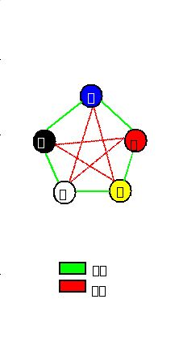

| 「源氏物語」を読み解く: 源氏物語は五十五帖？ 陰陽五行・易でみる源氏物語の深層 | |
| 福永利貞 | |
| fukunaga shuppan (2016) | |
「源氏物語」を読み解く
源氏物語は五十五帖？
陰陽五行・易でみる源氏物語の深層
福 永 利 貞
更級日記の作者である菅原孝標女は、おばにあたる人から、源氏物語を揃えで贈られ、あまりの嬉しさに「后のくらひもなにかはせむ」だったというのです。
つまり、后の位よりも源氏物語の方がずっと素晴らしいというのですね。
「ひるは日ぐらし、よるは目のさめたるかぎり」読みふけったとあります。
「源氏物語」が世に出てその時まだ数十年ですが、既にもう、このような熱狂的な読者がいたということですね。
千年にわたって読み継がれ、影響・感動を受けた人は数知れず、かつてユネスコが定める世界人類史の偉人で、日本人ではただ一人、紫式部が指定されたという経緯もあります（昭和四十一年朝日年鑑）。
そのような偉人でありながら、現在その作品である「源氏物語」を最初から最後まで読み通した人は意外に少ないように思われます。
現代語訳が多数出ているにもかかわらず、読み通す人が少ないというのは、まず大変な長編であるということがあげられるでしょう。
また、源氏物語を本当に理解しようとする時、古典そのものを読む素養もそうですが、他に例えば当時の貴族社会の風俗・習慣・美意識・宗教観、果ては歴史的背景や政治的、経済的状況に至るまでの様々な知識が必要になると思われます。
実は今まで多数の、様々な研究者、古典文学者、作家に至るまで、多くの源氏物語の現代語訳がなされているにも関わらず、そういった基本的知識全てに通じて訳されているというものがないというのは、考えてみれば当然のことかもしれません。
この本は、そういった意味では屋上屋を重ねることになるかもしれませんが、今までとは異なったメガネで源氏物語を見るとこう見えますよ、という一つの試みです。
作者・紫式部は、おそらく当時の第一級の文学的素養を持った女性で、そのレベルは当時の男性の学者をも凌ぐものがあったのではと推察されます。
特に今回、古代東洋の叡知である、「陰陽五行思想」というメガネを用いて見てみました。
紫式部が陰陽五行思想に通じていたかどうか、これは確証がありません。
しかし、陰陽五行思想というメガネを通して源氏物語を読み解いてみると、驚くほどあてはまることが多いのです。
これはもう式部が陰陽五行思想を（少なくともその枠組みは）知っていた、通じていたと考えるより他ないではないですか。
本人は意識して作品に取り入れていなくても、無意識のうちにその要素を組み込んでいたということも考えられます。
また、源氏物語には多くの謎があり、今も多くの人々によって研究されています。
その謎に対して、この本で、つまり陰陽五行思想というメガネを通すことによって、あくまでも仮説ですが、一つの解釈を提示してみたいと思います。この仮説によって、様々な謎に一応の筋の通った解釈ができると思われます。
これによって「源氏物語」に新たな興味を持つ方が増えればと願っております。
尚、陰陽五行思想そのものについては、この本の最後、第五章にその概略を記載しました。
興味のある方は、最初にそちらからお読み頂いてもかまいません。
―陰陽五行哲学に基づく源氏物語の展開―
日本文学史上屈指のこの名作は、主人公・光源氏の、いわば一代記といってもいいのですが、大きく、三つの部分に分かれています。
第一部。
光源氏の生まれる前、父親である桐壷帝と桐壷の更衣の物語。
（桐壷）から始まり、光源氏の成長、苦難の時期を経た後、出世、栄華を極めるまで。
第二部。
衰退、最愛の妻の死、出家、そして死を暗示させる（幻）まで。
第三部。
完結。中継ぎの三帖を経て「宇治十帖」を含む源氏の子孫たちの物語。
この「源氏物語」の構成において、陰陽五行思想、とりわけ、五行哲学の影響が見られるということは、既に民俗学者の吉野裕子さんによって指摘され、これは大変説得のある解釈と思われます。
しかし、「源氏物語」の根底に五行思想があり、その枠組みによって物語が築かれているという説は、今まであまり指摘されたことはありませんでした。
ほとんど顧みられなかった、というよりも、五行哲学を十分に理解して源氏物語を読んだ人がいなかったということだと思いますが、この五行哲学というメガネを通してみたとき、今まで気付かなかった源氏物語の、また違った「意味」が理解されてくるとしたら、これはやはり無視することはできないでしょう。
ここで、源氏物語の構成を五行哲学に則ってみた時に、どういう展開になるのかということを見てみたいと思います。五行哲学における五行の生成順は、水・火・木・金・土、となります。（「 第五章 陰陽五行思想について 」参照）
吉野裕子さんは源氏物語を全体でこの五行生成順に当てはめ、次のような展開を考えました。
第一部
１、「水」の時期・・始まりであり、艱難期
第一巻「桐壷」～第十三巻「明石」
源氏誕生から華やかな人生の出発を経て、政争に敗れ、須磨・明石への流譚から晴れて帰京するまでの期間。
２、「火」と３、「木」の時期・・盛運期
第十四巻「澪標」～第三十三巻「藤裏葉」
権力の座を駆け抜け、準太上天皇の位にまで登りつめる。
第二部
４、「金」の時期・・衰運期
第三十四巻「若菜上」～第四十一巻「幻」
最愛の妻、紫の上の病と死。女三宮降嫁・出産、柏木の死等々。身辺整理・出家を暗示。
第三部
５、「土」の時期・・完結（宇治十帖含む）
第四十二巻「匂兵部卿」～第五十四巻「夢浮橋」
源氏の子孫・所縁の人々の後日談と新しい展開。
それでは次章より具体的に追っていってみましょう。
陰陽五行に基づく源氏物語の展開
五行 水と火と木の物語
Ⅰ「五行・水」の物語。
―始まりと苦悩。（巻一「桐壷」～巻一三「明石」）
物語の最初は、光源氏の父である桐壷帝が、桐壷の更衣という、身分のあまり高くない女性を偏愛したことから始まります。
この当時、天皇の后は中宮（皇后）ですが、その他女御、更衣等々の女性たちが側にいて、天皇の寵愛を受けるべく競っていたわけです。
あまり身分の高くない桐壷の更衣のみ天皇の寵愛を独占してしまうわけですから、これは他の女御、更衣等々は面白くありません。
陰湿ないじめが行われます。
そうこうしているうち、桐壷の更衣に皇子が生まれます。
桐壷帝の第二皇子、そう、この物語の主人公、光源氏です。
しかし、桐壷の更衣は結局いじめに対抗することができず、光源氏が三歳の時に死んでしまいます。
陰湿ないじめによる死。
多分、千年の昔の宮廷に、実際にこのようなことがあったのでしょう。
優雅な宮廷を想像しがちですが、人間の集まりである以上、十分にありうることではないかと思われます。
ひょっとしたら人類が「心」というものを持った最初の段階からあったのかもしれません。
桐壷帝が他の女御、更衣をさしおいてここまで夢中になる位ですから、この桐壷の更衣という女性は美しく、そしてどことなく儚げな様相の女性だったのではないでしょうか。
こういう女性に夢中になるという桐壷帝の人物像にも興味のあるところです。
桐壷の更衣は、光源氏が三歳の時に亡くなるという設定ですから、母の面影が記憶されることがほとんど無理だったのでしょう。
このような状況で生まれ育った、特に男の子の場合、母という存在がどういう影響を与えることになるか。
光源氏の女性遍歴は、つまるところ、この（自分では覚えていない）母の面影を現実の女性の中に追い求めていくというところに、その遠因がありそうです。
ただ興味深いのは、光源氏は後々、幾人かの妻を迎え、その世話をすることになるわけですが、かならずしも皆、そういった面影を背負った美しい女性ばかりではなく、むしろ世間的には容貌、身分等、あまりパッとしない女性をも妻として迎え、きちんと世話をしていることです。
光源氏の持つ律義な良い面の一つと考えられるのかもしれません。
さて、美しさと才能に恵まれ、母親はいないものの、帝の厚い庇護のもとで大事に育てられた光源氏は無事、少年期から青年期へと育っていきます。
ある時、高麗（朝鮮半島にあった古代の王国）から来た使節団の中に優れた観相人（人相鑑定家）がいると聞き、こっそり光源氏を見させたところ、「帝王にも昇る人相であるが、そうなったらなったで国が乱れる。かといって臣下で終わるようにも見えない」というのです。
これも物語の重要な伏線となっていきます。
さて、そういったこともあり、元々強力な後ろ盾もなく、周囲への気兼ねもあり、様々な状況から帝は、この皇子に「源氏」という姓を与えて臣下に下します。
いわば格下げの人事を行ったわけですが、その代わり光源氏は現実の政治の中で腕を振うことが可能となっていくのです。
さて、 桐壷の更衣 を失った帝は、しばらくの間は政治も手につかないほど落ち込みますが、見かねた臣下が亡き桐壷の更衣によく似ているとされる女性を探し出し、後宮に迎え入れます。
これが「藤壺の女御」、光源氏のいわば継母となる女性です。
この当時、貴族、特に天皇・皇太子・親王の元服は早く、一定はしませんが十一才から十七才位の間に行われており、光源氏は十二才で元服をしております。
今でいう成人式であり、同時に結婚するという形が多かったようです。
元服・結婚が、単に個人の儀式であるということ以上に、多くが政治的な意味合い、権力的な背景を帯びたものが多かったと思われます。
光源氏の相手は、左大臣の娘、その母は桐壷帝の妹という設定であり、いわば、セレブ中のセレブの結婚ということになります。
ちなみに、この光源氏の結婚相手、名前を葵の上といいますが、四才年上、それもあってか、当初からこの二人しっくりいかず、十年ほどの間、あまり幸せな結婚生活を送ってはおりません。
性格の違いといってしまえばそれまでなのですが、やはりこれは二人が若すぎたというところに問題があったのではないかと思われます。
最後の最後、ようやく葵上が懐妊し、光源氏との間に心の通ずる気配が出て来たところで葵の上はこの世を去ってしまい、死に際の状況も相まって哀れを誘います。
光源氏は、そういう中にも、亡き母に似ていると言われる藤壺に対する思慕の念をどうすることもできません。
二、「帚木（ははきぎ）」
「帚木」、ははきぎ。信濃の国の伝説上の木の名とされています。遠くから見ると箒を立てたように見えるのが、近づくと見えなくなるという。
気のある素振りを見せながら、実際に近づくと素っ気ない態度をされる譬えとされています。
源氏の君十七才。物語では詳細は省かれてはいるものの、既にかなりの女性遍歴を重ねているという設定です。
冒頭の物語がいわゆる 「雨夜の品定め」 という、源氏物語最初の段階での有名な箇所。
源氏物語を最初から最後まで通して読まれていない方でも、最初のこの部分は知っているという方は多いのではないでしょうか。
若い男が数人、五月雨の降る夜に集まってする話しなど、千年前も今も変わらないというところでしょうか。
男にとって（結婚をする上で）最も理想の女性はどういう女性かという、まあいわば永遠の課題ではありますが、興味深いのはこれを書いたのが紫式部という女性であるということで、しかし語られている内容はあくまで男性の目線によるということです。
読んでいてなるほどと思うところが多々あります。
ここから、実は紫式部に有力なパトロンがいて、そこから仕入れた知識であるという考え方も出てきています。
しかしこの「雨夜の品定め」、設定を変えて、女性数人が集まって男の品定めをやったとしても、多分同じような結論になるのではないかと思われます。
言っていることは、（結婚するのであれば）何事にも（身分も含めて）中ぐらい（中の品）の、程々の相手がいいということです。
源氏の君は、その相手としている女性が、中身はともかく、少なくとも身分的には高貴な女性たちばかりで、その意味ではこの品定めの会話は、源氏の君の女性観に一つの転機をもたらしたことはたしかで、早速それを実行に移す行動をしております。
この時代、いわゆる「方違え」ということがよく行われていました。
外出の際、目的地の方位が（占いで）よくないとされた場合、前日に良い方位に一旦出かけておいてそこで宿泊、改めて次の日に本来の目的地に行くというやり方です。
中には本来の使いみちとは異なる、あまり公にはできない訪問をする際のいわば隠れ蓑・方便として使われることも多くあったようです。
源氏の君はある日、方違えとして、ある臣下の屋敷に赴きます。
気の張る上司が家に来るなど、嫌なことであるのは昔も今も同じで、その臣下（紀伊の守の息子）は遠まわしに源氏の君の来訪を断るものの、そんなことで止めるような源氏ではありません。
もの珍しさもあって邸を歩き周っている内に偶然、紀伊の守の後妻と遇い、強引に契りを結んでしまいます。
この女性が「空蝉」です。
そしてこの女性が「雨夜の品定め」でいう「中の品」の女性ということになります。
味をしめた源氏の君は再び訪れますが、今度はすげなく逃げられてしまいます。
だから、「帚木」ですね。
源氏の君の女性遍歴における手痛い挫折ということになります。
三、「空蝉（うつせみ）」
前段でまんまと逃げられた源氏の君ですが、すげなくされるほど燃え上がるという困った性分から三度、紀伊の守邸を訪れます。今度は念入りな首尾をということでしょうか、空蝉の弟の小君を手引きに使います。まんまと上首尾というところまで行くのですが、すんでのところで空蝉は 薄衣を脱ぎ捨てて逃げて しまいます。代わりに一緒にいた空蝉の継娘である軒端の萩と源氏の君は契りを結んでしまいます。
いきがかり上ということなのでしょうが、この軒端の萩に対する源氏の君の口説は見事。
しかしこの場面、空蝉の本心は必ずしも源氏の君がいやというわけではなく、また軒端の萩にしても、それ以来何の音沙汰もない源氏に対し 、 鬱々としたものを感じたに違いありません。
このあたり、複雑な心理は紫式部の得意とするところ。
巻名は、空蝉があわやという時に薄衣を脱ぎ捨てて逃げてしまったことから、それを蝉の抜け殻に譬えてつけたものとされています。
四、「夕顔（ゆうがお）」
源氏の君（以降、源氏と略称）の乳母が病気になり臥せっているということを聞き、源氏が見舞いに行く場面。
もっとも、その乳母のみの見舞いのために出かけたわけではなく、ある高貴な女性のもとにお忍びで行く際のついでにという設定になっています。
乳母の住居の前に風情のある家があり、花が咲いています（夕顔）。
中には人（妙齢の女性が）がいる模様。
付け人である惟光に探らせ、また手引きさせて、この女性とも懇ろになる源氏。
物語の上では、「雨夜の品定め」で源氏の親友でもあり、義理の兄にもあたる頭中将が嘆いていた行方分からぬ愛人、この夕顔がその愛人であったという設定になっています。
この夕顔もいわゆる「中の品」の女性ということなのでしょうか。
自分というものをあまり出さない、ある意味、男性の言うがままの女性。
源氏物語に出て来る数多の女性の中で男性の人気が高いとされるこの夕顔。
一緒に居て気持ちが休まるということなのでしょうが、しかし、こういう面も持ち合わせています。・・最初、源氏は身分柄、顔を隠していたのですが、ある時その仮面を外し「どうだい、俺の顔は」というような発言。
それに対する夕顔の答えが「たいしたことないわね」というもの。
意外に鋭さ、刃を持った女性であり、決して心の底まで言いなりというわけではありません。
さて、
密会を続けるある日、源氏は夕顔を侍女の右近と共に、荒れた廃院に連れ込みます。
誰にも邪魔をされず、夕顔と甘い時間を過ごす。
ところがその夜、奇怪な女の生霊が二人の前に現れます。
恐れおののく夕顔と侍女の右近。
そうこうしているうちに、夕顔があっけなく死んでしまいます。
呆然とする源氏。映画ならちょっとした見せ場といったところでしょうか。
明け方近くになってやっと付け人の惟光が現われ、腑抜けのようになっている源氏を邸に帰し、自分は亡くなった夕顔を車で密かに火葬場であった鳥辺野に運び、全ての処理を終えます。
さて、ここに「生霊」というものが出てきます。
「死霊」に対する「生霊」。
生きている人間の魂が現身を離れ、心に強い思いを持つ相手に対して何らかの行為・現象を生じさせる。
実はこの「生霊」という概念、それまでにはなく、紫式部が初めて言い出したことではないかという説があります。
紫式部の宗教観については専門の研究が為されていますが、ひょっとして式部はいわゆる心理学における潜在意識・深層意識というものの存在を感じ取っていたのではないかと思われる節があるのです。
或いは、大乗仏教における「唯識論」についてのいくらかの知識・知見を有していたか。
「唯識論は」仏教における深層心理学ともいわれ、現代心理学でいう潜在意識と強いアナロジーを持っているものです。
ここに紫式部の和歌集である、紫式部集の 四四に
「亡き人に 託言（かごと）をかけてわづらうも をのが心の 鬼にやはあらぬ」という歌があります。
この歌の前書きに「絵に、物の怪つきたる女のみにくき図書きたる後に、鬼になりたるもとの妻を、小ぼうしのしばりたる図書きて、をとこは経読みて、物の怪責めたるところ見て～」とあります。
紫式部がある絵を見て詠んだというのです。
その絵は、ある男がその妻にとりついた物の怪を調伏するところを描いたものであり、絵の後方では男の亡き先妻が鬼に姿を変えて小法師に捉えられている姿が画かれています。
歌の意味は、「男は妻にとりついた物の怪は亡き先妻であると考え、経を読んで調伏しようと考えているが、それは実は男自身の心のやましさのせいではないのか、男の罪悪感が昂じて心中に物の怪としての先妻の幻影を作り出しているのだ・・」というものです。
紫式部は男の（無意識レベルの）心の奥底を見破っているということですね。
実はこれには返歌があります。
紫式部集 四五
「ことわりや 君が心の闇なれば 鬼の影とは しるく見ゆらむ」
詠み人は不詳ですが、無論、紫式部は知っていたはずで、敢えて名前は伏せられているということでしょう。
意味は、
「なるほどね。それはあなた自身の心が闇だから、同じ闇、つまり心の鬼が分かるということなのですね。」
紫式部自身の心の暗闇を見破ったこの歌、大変鋭い洞察で、ただ者ではありません。
とても千年前に読まれた歌とは思えません。
この巻に、惟光という源氏の付け人が登場します。
多くがニックネームで呼ばれている源氏物語の登場人物の中で、本名らしき名前で呼ばれる数少ない人物ですが、物語の中では、ある意味、特異な存在という印象があります。
何より、一種独特の親近感を持たれている存在ということでしょうか。
ひたすら付け人として源氏に尽くし、特に源氏の、あまり公にはできない行動、つまり数々の恋愛遍歴におけるやっかいな後始末等々は、全てこの惟光がやっています。
特に印象が深く、惟光の本領発揮とされるのが、「夕顔」巻での惟光のとった行動で、愛人である夕顔の変死の後、茫然としている源氏を助け、全てを一人で内密に片付けます。
或いは紫の上を二条院に隠し入れるまでの連絡役等々、源氏の内密の用件には必ず登場し、無論、源氏の須磨流譚にも随行します。
この惟光という付け人、実は源氏の乳母（大弐乳母）の息子で源氏とはいわゆる乳兄弟にあたります。
当時、皇族・上級貴族の女性たちは、子供が生まれても自分で育てるということはせず、乳母がその役割を果たします。従って子に乳を飲ませることから、その乳母自身にも同じ年頃の子がいなくてはなりません。
源氏と惟光はそういう関係で育ち、ほとんど兄弟同様に育ったといってもいいでしょう。
自然、惟光は源氏の付け人として世話をしていくようになります。
何しろ赤子の時から一緒ですから、お互いその性格等知り尽くしての関係ということになります。
物語の中でのこの惟光の描写、主人の源氏に劣らぬなかなかの「好き者」として描かれており、源氏の女性遍歴の後始末とは言っても、源氏が相手をする貴族の女性たちは当然、その周囲に女官が大勢いたでしょうから、実は惟光自身、おこぼれに預かるところが多かったにちがいありません。
さてこの惟光に、物語の中（巻「乙女」）では「五節の舞姫」として描かれている、娘（後の藤典侍）がおります。
五節の舞とは、奈良時代以降、大嘗祭（だいじょうさい）や新嘗祭（にいなめさい）において行われた、豊明節会において舞われる舞のことで、通常、公卿や受領階級の娘から選ばれた四～五人の舞姫によって舞われます。
ちょっと考えると、この舞で舞うことは大変名誉なことのように思われますが、しかし、この当時、貴族社会においては、女性が人前に素顔をさらけ出すことは大変はしたない、恥ずべきことと考えられており、その中で舞姫として舞うことは本当はどうだったのか。
紫式部自身は、このように人前で姿をさらけ出して舞わねばならない舞姫たちに、大変同情的な感慨を抱いております。
物語の中でも、五節の舞姫として娘をさし出すようにという源氏の指示に対し、惟光がしぶしぶ従う場面が描写されています。
ところが、この惟光の娘である五節の舞姫が舞うところを見て、源氏の長男である夕霧が見初めてしまい、側室として迎え入れてしまうのです。
無論、側室であって、妻ではありません。
この側室との間に五人ほど子を儲けます。
その末娘、六の君と呼ばれる女性は大変美しい女性として育ち、第三部・宇治十帖において、今上天皇の第三皇子である匂宮の、今度は正妻として迎えられることになるのす。
父親は内大臣・夕霧であり祖父は光源氏。家柄としては申し分ありません。
問題はこの後。
物語上はそこまで描写されていませんが、もし匂宮が（物語上は今上天皇の第三皇子ですが）東宮（つまり皇太子）、そして皇位継承・即位ということになるとどうなるか。
惟光の孫の世代で皇后、更にひ孫の世代で天皇が出るということもあながち夢の世界ではない、現実の世界という設定になってくるのです。
紫式部がそういう可能性をひめた設定になるということを知った上で書いたかどうか。
これは明石一族に対する描写を見てみるとき、知っていて書いたと考える方が自然と思われます。
下の者が上の者にとって替わるという、いわゆる「下剋上」的なことが実際に出て来るのはもっと後の時代になってからのことですが、しかし透徹した眼で人をも、社会をも見ていた紫式部にとって、そういう成り行き・可能性はしっかりと見えていたのかもしれません。
いよいよ源氏物語最大のヒロイン、紫の上（幼い時の若紫）の登場です。
それとともにこの巻では源氏と藤壺との密会、懐妊という、今後の物語の展開の上で大変重要な二つの出来事が語られます。
源氏十八歳の春、わらわ病みという、いわゆるおこり、周期的に発作が起き、高熱を発する一種の流行り病いでしょうか、罹患し、治療（といっても加持祈祷）のために北山の聖のもとへ訪れます。
その時。
北山の清新な景色に身を委ねながら、お供の人とのよもやま話で、明石の入道と、その娘の話しを聞きなどして過ごします。
これも後々の物語の展開の上で、大きな伏線となっていくものです。
そうした中、周囲を散策していた源氏は、某僧都の住んでいる、とある坊に女性の気配を感じ、小柴垣ごしにのぞきこみます。
気品のある尼君がいて、その側に十歳位の幼いが可憐な美少女が現れました。
源氏はこの幼い少女に強くひきつけられます。そしてこの少女を自分の手元に引き取りたいと思うようになります。
この少女がただ単に美少女であるから、その理由だけで源氏はひきつけられたのだと考えると、源氏は唯のロリコン趣味ということになってしまいます。
実はこの少女、片時も忘れない藤壺によく似ていて、それもそのはず、実は藤壺の姪という設定になっています。
そして、その藤壺は源氏の亡き母によく似ているという設定です。
お分かりでしょうか。
源氏は無意識の内に、亡き母の面影を追おうとしていることになります。
その面影を宿した少女を自分の元に引き取り、自分の思いのままの女性に育て上げていく。
ある意味では男のロマン、潜在願望の実現、遠大な計画ともいえます。
しかしある意味ではこれほど自己中心、身勝手な話しもないとも思われます。
さて、この少女、つまり幼い時の紫の上、従って若紫と呼ばれますが、源氏が引き取りたいといっても、あまりに唐突な話しで、保護者である尼君がそう簡単に許すはずがありません。
一方、その前後の話し。
ある時、源氏あこがれの藤壺は病のため宮中から本来の自邸にと戻っていました。
源氏は藤壺の侍女である王命婦を説き伏せ、やっとのことで藤壺との逢瀬にこぎつけます。
儚い密事。
いやがる藤壺を強引に自分のものにしてしまう源氏。
実は源氏と藤壺の密事、これが初めてではなく、物語の上では既にあったことが暗示されています。
后と義理の息子である皇子との逢瀬の手引きを侍女がする。
普通では考えられない行動で、実はこの場面、侍女である王命婦の存在が大変重要なポイントであるように思えるのですが、無論、物語にはその記述はありません。
結局この逢瀬で藤壺は懐妊してしまいます。
源氏と藤壺。
絶対に秘密にしなければならないこの事件で、苦悩は深まりますが、ある意味で互いの絆を強くし、何よりも、生まれてきた皇子（後の冷泉帝）を守るべく協働していくことになっていきます。
ともあれ、藤壺をめぐっての焦り（密事の後、藤壺は源氏と会うことを一切拒みます）・イライラが源氏を駆り立てたのかもわかりませんが、若紫については、その保護者である尼君が亡くなり、結局、紆余曲折はあったものの、最終的にはほとんど拉致同様の形で源氏によって自邸に連れ去られ、以降、源氏の庇護のもと、様々な薫陶を受けることになっていきます。
心理的にはほとんど藤壺の身代わりといってよいでしょう。
源氏物語最大のヒロイン、紫の上。その幼少時代が「若紫」です。
この若紫が「紫の上」になる、その変化の時点が、この物語の重要な伏線となる時点でもあります。少なくとも、紫の上の哀しみ、苦悩の原点がここにあると思われるからです。
しかしそもそも、紫の上の苦しみは、主人公である光源氏その人にその源泉があるわけですから、光源氏の（女性に関しての）原点は何かということを抑えておかねばなりません。
光源氏は、桐壷帝の第二皇子。但し母は桐壷の更衣。あまり身分の高い出ではありません。桐壷帝の愛を独占した形になり、他のお后や女官達の執拗な嫉妬といじめにあいます。
この桐壷帝の人物像も実は大変興味深いものがあるのですが（少なくとも女性があまり頼ってはならないタイプの男）、結局桐壷の更衣は心労のあまり病床につき、最後は儚く世を去っていきます。
光源氏の一生の、いわばあくなき女性遍歴はつまるところ、この幼くして失った母の面影を、現実の女性の中に追い求めるという、心理学的には比較的単純な理由に帰着していくように思われます。
さて、桐壷の更衣を失った桐壷帝は、桐壷の更衣に大変よく似ているとされる藤壺を後宮に迎え入れることになります。今度は身分も高い家柄の出であり、更衣ではなく、女御として入内するわけですから、他の女御たちもあからさまな嫌がらせをすることができません。
この実母とよく似ているとされる藤壺に、源氏は最初は母のごとく慕い、しかし段々それが恋心に変わっていくのをどうすることもできません。
結局最後は過ちをおかし、皇子（桐壷帝の子供として）まで成してしまいます。
藤壺との間がうまくいかず悶々としていた時に、たまたま今度はこの藤壺に良く似た少女に遇うことになります。これが若紫（後の紫の上）です。
ほとんど拉致同様に自邸に引き取り、全く自分好みに若紫を養育していきます。
自分の追い求める面影を宿した幼い少女を、自分の好みのままに育てていく。
ある意味では男の理想を具現化しているかのようにも見えます。
しかし光源氏の若紫に対する態度は、あくまで、自分の理想としている女性の身代わり（人形・ひとがた）として存在するのだということに注意しなければなりません。
源氏の一生の物語は、ある意味では、ひとがた、つまり身代わりとしての紫の上が、実は身代わりでもなんでもなく、真実自分にとってかけがえのない存在であったということに源氏自身が気付いていく、その過程にあると言ってもいいかもしれません。
しかしそれは、逆に紫の上の立場からいうと、裏切られ、裏切られ、遂には完全に源氏を見放すという構図になっていきます。
ともあれ、かくして源氏邸に引き取られた若紫、物語上は、若紫・十歳、光源氏・十八歳位と想定されています。
源氏と共に暮らし、毎日のように様々なことを源氏に学び、夜は夜で添い寝をして過ごす。
この二人が年を取らないという前提であれば、この状態はこのまま続くということになるかもしれません。
しかし、幼かった若紫も数年たつと・・・。
ある日の朝、源氏だけが起きてきて、若紫が起きて来ないという日がありました。（巻・葵）。
原文（小学館版）ではこうなっています。
～男君はとく起きたまひて、女君はさらに起きたまはぬ朝（あした）あり。人々、「いかなればかくおはしますならむ。御心地の例ならず思さるるにや」と見たてまつり嘆くに、～
～男君（源氏）のほうで朝早くお起きになって、女君（若紫）はいっこうにお起きにならぬ一朝があった。人々（周囲の女官達）が「どうしたわけでこういつまでも寝（やす）んでいらっしゃるのでしょう。お加減でもよろしくないのかしら」とお案じ申していると～
父とも兄とも頼っていた源氏の突然の豹変です。若紫もたまりません。
いわば、ほとんどレイプに遇ったようなものでしょう。
この後しばらくの間、若紫は源氏と口をきこうともしなかったと描写されています。
それはまあ、そうでしょう。
むしろ興味深いのは、実はこの事態においての周囲の女官達の対応です。
～「どうしたわけでこういつまでも寝（やす）んでいらっしゃるのでしょう。お加減でもよろしくないのかしら」～
とあります。
モデルとなった中宮彰子の後宮のみがそうだったのかもしれませんが、これは女官としては全く失格、女官の務めを果たしているとはいえません。
本当は女官たるもの、何が起きたのかを敏感に察知し、きちんとケアしなければならない。
実はここに作者・紫式部のちょっと「皮肉」が見てとれます。
話しは少しそれますが、この時代、例えば中宮彰子、つまり皇族クラスの女性になりますと、お付きの女官も三～四十名はいたと想像されます。
無論仕事は細かく分かれていて、着物の係りから食事の係り、尾籠な話しですが、下の世話に至るまで細分化されていたと思われます。
階層も簡単に言うと、上層の女官、中層の女官、下層の女官と分かれていたとされています。
上層の女官の仕事。例えば来客があった時の取次。
この取次という仕事、そう簡単にできる仕事ではない。来客の意図を正確に把握し、それを過不足なく主人に伝え、求められれば意見も言う。これは相当に力量がないとできないことなのです。
中宮彰子、取次のきちんとできない女官に悩まされたことが多かったのではないでしょうか（紫式部日記）。
問題は、実務経験を経た女官が下層から順次昇進して上層に入るというわけではなく、上層、中層、下層と最初から出身の家柄によって決められていたということです。中には落ちぶれた皇族クラスの出の女官もいたとされています。
唐突なたとえですが、大会社の社長が取引先の経営者に頼まれてその娘を入社させ、仕方なく自分の秘書にしたが、全く使い物にならなかった・・・そんな構図でしょうか。
もっともこれは道長とその妻倫子の意図が働いていて、彰子後宮を優雅なおっとりとした雰囲気にしたかったためなのかもしれません。
無論例外もあり、実は紫式部自身は下層から入って最後は上層までいっています。
因みに紫式部の娘は、更に上をいき、最後は従三位の位まで出世しています。
上層の女官達は、自分自身が実家に戻ればお姫様として遇される立場で、女官として自分が何をしなければいけないかほとんど分かっていなかったのが多かったのではないでしょうか。
終日自分の部屋でおっとりと構えていた女官もいたとされています。
これは推測ですが、中宮彰子が心を許し、相談相手として信頼していたのは紫式部ただ一人だったのではないでしょうか。
式部が後年、宮中を離れた後も時折中宮彰子に呼ばれて参内した気配が残っております。様々な諮問に応えていたのかもしれません。
さて、本題。
かくして、源氏の妻に、かなり強引にされてしまった紫の上ですが、この当時の特に貴族社会における結婚制度について一言。
現代の結婚の形態とは違い、当時の、特に貴族の結婚は「通い婚」が基本です。
当時のいわゆる深窓の姫君たちは、人前、特に男性の前に姿を見せるということは大変はしたないこととしていて、夫か父親でない限り 、 その姿を見せることはありません。
ではどのようにして男性は女性を探すのか？
もっぱらは噂によります。
その上で、これはと思う女性がいたら、まずは垣間見、文字通り垣根の間から覗くわけですが、当時はそれが悪いこととはされなかったようです。
実は源氏が初めて若紫（紫の上）を見初めたのもこの垣間見によるものです。
そして次は手紙攻勢。
ここで大変重要な要素となるのが、姫君を取り巻く女官達ということになります。
男性から手紙が届いたらまず女官達がその手紙の品定め。
中に書かれている文の中身（当時のことですから歌・つまり和歌に託することが多い）、について、その教養の程度、筆の上手下手、感性は勿論、果ては紙の質・デザインに至るまでが品定めの対象となります。
それも一回ではだめで何回も出します。無論、姫君側もただ受け取るだけではありません。それなりの返事を出すことになります。
しかし姫君といっても千差万別、皆が皆、見事な字で見事な歌が作れるわけではありません。女官による代筆等も多くあったことでしょうし、特に最初の段階ではそうでしょう。
姫君がどういう相手と一緒になるかは、そのお付きの女官にとっても、いわば死活問題ですから必死にならざるを得ません。
かくしてある日、女官の導きで男性が姫君の部屋を訪れ、契りを結ぶことになります。
明けて翌朝、男性は帰りますが、ここで約束事。
まずすぐに男性は姫君に対して文を出さねばなりません。これを「後朝の文（きぬぎぬのふみ）」といって少なくとも姫君側にとっては大きな意味があります。もしこれが来なかったら、姫君側にとっては大変な屈辱、この縁は無かったということになります。
しかもこれを三日続けることが要求されます。
晴れて三日続いて初めて婚姻成立ということになります。
この時に行われるのが「三日夜の餅」。姫君の方で用意し、これを供えることで婚姻成立となるのです。
これは現在の宮中でも、皇族の婚儀に行われている儀式で、「三箇夜餅の儀（みかよのもちのぎ）」として連綿として伝わっています。
この後、少し期間をおいて行われるのが「露顕（ところあらわし）」。
言い得て妙ですね。「ばれちゃった」という感じでしょうか。
今でいう結婚披露宴のようなもので、姫君側の両親や親類知己との対面披露が行われます。
さて、当時、一人の男君に対し、複数の妻がいるというのが常態であった時代、正式の妻といわゆる妻との線引きをどこでするのか。
確実なところは分かりませんが、一応「三日夜の餅」まで終わっていれば妻、「露顕」まで終わっていれば、いわゆる「正妻」ということになるのではと考えられます。
そう考えないと、あと後の紫の上の苦悩が浮かび上がってこないのです。
では、紫の上の、源氏との結婚の場合はどうだったのでしょうか。
前述の通り、紫の上は、源氏によって拉致同然に引き取られた形で、自分を後見する実家というものがありません。本来は姫君側の実家で用意すべき「三日夜の餅」も、源氏の付け人である惟光によってかろうじて形が整えられたほどです。ましてや「露顕」までは行われていないのです。
お分かりでしょうか。
紫の上は形の上では、押しも押されもせぬ源氏の妻として君臨しますが、あくまでも妻であって、「正妻」ではないのです。
源氏物語を読む上で感嘆するのは、その物語構成上における（陰陽五行思想を背景とする）全体のプロット、或いは様々な伏線等々の見事さです。
源氏物語の研究者の中には、源氏物語が複数の人達によって書かれたという説を唱える人もおります。実証的なことは今後の研究を待たなくてはなりませんが 、 しかし、大勢の作者によって、これだけのプロット、伏線等々が統一的に書かれるものかどうか。
また、源氏物語は一人の人間が書くには登場人物の数やキャラクターがあまりに多すぎるという説もあります。
確かに源氏物語が短期間に書かれたものであれば、そういう疑問も納得できますが、今の研究では、少なくとも第二部まではおおよそ十年ほどかけて作られたとされています。
それ位の時間をかければ、多数の人物像を書き分けるということは可能なのではないでしょうか。
それはさておき、紫の上は事実上は中心的な妻として物語は推移しますが、背景にその存在基盤の危うさがあったということ。またその事実が後々の物語の展開の大きな伏線になっていることに留意しなければなりません。
何かのきっかけで宮家の姫君の存在を知った源氏。
やっと逢瀬にこぎつけますが、その容貌に愕然とします。
その容貌から「末摘花（赤い鼻の女）」と名付けられた姫君は単に容貌だけでなく、立居ふるまい、センスそのものも魅力がない女性として描かれています。
この帖では、多分末摘花との対比のためでしょうか、最後に幼い若紫を登場させ、そのあどけない美しさを描写、末摘花をからかいの種にするという、見方によってはややあこぎな終りとなっております。
源氏の肩を持つとすれば、この帖で源氏は終生、末摘花の面倒を見るという気持ちを固めたことでしょうか。
七、「紅葉賀（もみじのが）」
源氏物語にはいくつか、いわゆる名場面というべきものがありますが、この「紅葉賀」もその一つ。源氏が相方である頭中将と舞楽、「青海波」を舞う場面です。
桐壷帝の朱雀院への行幸が決まり、そこで行われる舞楽の試楽（リハーサル）が行われることになりました。懐妊中の藤壺中宮を慮って行われるものですが、その宿している子供は藤壺と源氏の密事の子であるということが背景にあります。
そこで舞われるのが「青海波」です。
舞われる「青海波」の美しさと、それを見る藤壺中宮の罪の意識と苦しみ。その対比。確かに名場面には違いありません。
そうこうしているうちに、藤壺に若宮が誕生します。当然というべきでしょうが 、 源氏に生き写しの若宮とされています。帝はいたく喜びますが、源氏に生き写しということについては何の疑念も抱いてはいないようです。
実は帝は、藤壺と源氏の密事を知っていたとする解釈があります。
研究者によっては、帝自身がその密事そのものをそう成るべく手引きしていったとして解釈もしております。
紫式部自身がどういうつもりで書いたのか、これはもう全く憶測の域を出ないわけですが 、 しかし、帝が何もかも知っていたとする方が、物語としてずっと奥行きが深くなることは確かなようです。
この帖ではまた、六十歳近いとされる好色な老女官（源典侍）とのユーモラスな出会いも描かれており、源氏の女性遍歴のバリエーションの豊かさが見どころの一つとなっています。
八、「花宴（はなのえん）」
宮中南殿で行われた花見の宴。
前の「紅葉賀」に続く、宮中での華やかな催しの第二弾。
その花見の宴のあと、後の須磨・明石流譚の直接の原因となる朧月夜との出会いがあります。
この朧月夜、源氏からは政敵になる右大臣の娘という設定で、既に宮中への入内が決まっており、これもいわば許されない禁断の恋ということになります。
後々の物語の展開の上での重要な伏線になります。
九、「葵（あおい）」
有名な「車争い」の場面。
源氏の父である桐壷帝が譲位、帝には弘徽殿の女御腹の東宮（皇太子）が朱雀帝として即位、新帝の母である弘徽殿の女御もまずは一安心というところでしょうか。
光源氏は近衛大将に昇進しています。
そういったある日。たまたま賀茂祭（かものまつり）がありました。
賀茂祭は、別名、葵祭ともいい、今も京都の三大祭りの一つとして数えられています。
三大祭の中では、この賀茂祭が最も古く、平安の当時、祭といえばこの賀茂祭を指すほど有名で、都をあげての豪華な大祭だったようです。
祭の行列に光源氏も加わるということもあったのでしょうが、その見物に源氏の正妻である葵の上と愛人の六条御息所が出かけるのです。葵の上は懐妊中ということもあって気乗りではなかったのですが、周囲の女官達にせがまれて出かけます。
一方、六条御息所は源氏に関して鬱々とした気持ちでいて、その少しでも気晴らしになるかと出かけるわけです。
双方共 、 決して良い精神状態ではなかったところで出かけたというところがポイントと思われます。
場所を巡って双方の車がぶつかり、争いが起きますが、六条御息所の車が大破、大変な屈辱を受けます。正妻と愛人の争いに愛人が負けたという構図でしょうか。
そしてこの事件は葵、六条御息所双方の心に、特に六条御息所の心に深い傷を負わせます。
この後、葵の上は、しばしば六条御息所の生霊に苦しむことになりますが、程なくして男の子（夕霧）を出産します。
この出産の時にまたしても「生霊」が出現、六条御息所の生霊にとりつかれたという形で葵の上は息を引き取ることになるのです。
大変興味深いのは、葵自身が「六条御息所」の存在に心中強く葛藤を抱えていたであろうということ。また六条御息所もひょっとしたら自分が生霊になって取り殺したかもしれないと自らを疑っているということ。
更に、六条御息所が目を覚ましたら、その髪の毛にも着物にも「芥子の実」の匂いがしたと描写されていることです。
「 芥子の実 」。―密教系の祈祷の際、護摩として焚かれることが多いものです。
ご存知の通り、芥子の実（正確には花房）からアヘンが取れ、そのアヘンを抽出することによって、外科手術でも使われるモルヒネができます。更にそのモルヒネから悪名高い麻薬、ヘロインが合成されます。
ここから導き出されることは、「生霊」というものを持ち出さなくても、無論いくつかの偶然が重なることが必要ですが、ある種の物質（薬物）が用いられることによって、人間の奥深い心の現象としては、こういった出来事は可能であるということです。
この帖では、もう一つ重要な事実が描かれています。
葵の上の四十九日が終わった段階で、源氏の君は若紫（紫の上）と新枕、つまり結婚という状態なったということです。
この持つ意味については別掲（ 【コラム】「若紫」を考える ）で既に述べました。
十、「賢木（さかき）」
六条御息所。
葵との車争いのあと多分、身も心も疲れ果てたのでしょう。娘が伊勢の斎宮になったのを機に自分も伊勢へと下向します。
源氏との別れが、これも源氏物語中での名場面とされる「野々宮の別れ」です。何故これが名場面なのか。多分、これぞ源氏物語、という風情・情感がたっぷりの場面だからでしょう。
この帖では、さらに源氏の父である桐壷院が病状を悪化させ崩御となることが述べられます。
政治の中枢も、右大臣方、つまり源氏の政敵に移っていくわけで、段々と追いつめられていく様子が描かれています。
こういう時において、いや、こういう時だからこそというべきかも分かりませんが、源氏の立場が決定的に悪化する事件が起きます。
こともあろうに政敵、右大臣の娘である朧月夜と間違いをおかしてしまうのです。朧月夜も朧月夜で、適当に止めておけばいいものを、源氏との密会を楽しむという大胆さを持っていて、結局これが右大臣側にばれてしまうのです。
源氏追い落としの格好の口実を右大臣側に与えたことは言うまでもありません。
藤壺の出家。
政情が不安定な中、東宮の後見を源氏に頼るしかない藤壺にとって、悩みの種は、未だに続く源氏の自分に対する恋心です。
そのような時、源氏が藤壺の寝所にまた忍び込むということがありました。嫌がる藤壺に対し執拗に迫ります。
その時の描写。
原文（小学館版）では（藤壺の着物を掴まえて）「見だし向きたまへかしと心やましうつらうて、ひき寄せたまへるに、御衣をすべしおきてゐざり退きたまふに、心にもあらず、御髪の取り添へられたりければ、いと心憂く、宿世のほど思し知られていみじと思したり」。
つまり、
「（源氏が）せめてこちらを向いてください、とじれったい気持ちから藤壺の御衣を引き寄せようとすると 、( 藤壺 は) 着物を脱ぎ棄て逃げようとします。ところが御衣とともに、藤壺の長い髪の毛の一端が御衣と一緒になって源氏に握られていて藤壺は逃げることができません。上半身が裸に近い藤壺が、のけぞるような形で源氏に引き寄せられていく。
源氏物語の中、いくつかある官能的な描写のこれもその一つと言えるでしょう。
ともかく、源氏の思いのどうすることもできないことを悟った藤壺は、はっきりと出家を決意し、桐壷院の一周忌、法華八講の際に出家を果たすことになります。
十一、「花散里（はなちるさと）」
この帖。置かれている源氏の状況、政治的には風前の灯火の状態であるということを考えると、いささか不自然な印象を与えます。そもそも何故ここで「花散里」という女性を登場させたのか。
花散里。
――後々、源氏の嫡男である夕霧に「父はなぜこのような（あまり魅力のない）人を妻として迎えたのだろう」と言わしめた女性。
源氏が六条院という広壮な邸宅の一角に住まわせ、源氏の人生に少なからず意味を持ったであろう女性。
数多く登場する女性たちの中で唯一、源氏が一番気楽に接することができたのがこの花散里だったのではないでしょうか。
それ故にこそ、嫡男である夕霧や、亡き夕顔の忘れ形見である玉鬘の養育を託す。
気楽でありながら、よく気の付く点もある。
政権争いに敗れ、自ら都落ちを決意する源氏にとって（いや、男というものにとって）最後、ギリギリのところで安らぎを求めるのは、こういったタイプの女性なのではないかとも思われます。
十二、「須磨（すま）」
いよいよ源氏の京から須磨への流譚の物語です。
周辺が（朧月夜とのことも含め）面倒なことが多くなって、じたばたしてもますます状況は悪くなる。ここは一旦身を引こうと思ったのかもしれません。
付け人の惟光を含む、ごく少数のお供を連れての都落ちとなります。
この「須磨」と次の「明石」が、源氏にとっていわば、失意のどん底の時期で、流れから言うと源氏の人生における一種の「禊」の期間ともいえるものです。五行・水の水たる由縁です。またこの時期に、源氏人生において重要な意味を持つ明石の君との出会いもあります。
そのまず前半「須磨」。
現在の地名では神戸市須磨区。今も風光明媚な景勝地として名高い所ではありますが、千年前は多分荒涼の地だったと思われます。
しかし何故「須磨」なのか。退去の地としてあまり都から遠くなく、しかし近くもないという、いわば絶妙の場所ということかもしれませんが、実はちゃんと伏線があります。
無論源氏がその伏線を意識してこの地を選んだというわけではないでしょうが、巻五「若紫」に明石に住む姫君のことが話題になっているのです。
そのすぐ近くである「須磨」。
無聊をかこつ生活ではあるものの、都とは全く無縁というわけではなく、女君達との文のやりとりは多く、中には遠く六条御息所からも届いています。またこの時期、源氏と親しくすることは自身の立場が悪くなるという中にありながら、旧友の頭の中将も見舞いに来ます。
ともあれ、この須磨、明石での一年半に及ぶ流譚の生活は源氏を一回り大きく成長させる、大きなターニングポイントとなります。
十三、「明石（あかし）」
明石一族との出会い。
あるいきさつから、須磨から明石へと移り住みます。そのきっかけを作ったのが明石入道と言われる人物。
元々は立派な家柄の出であったものが、その偏屈さから都におられず、形の上では自ら望んで明石に受領として移り住み、巨万の富を蓄えたとされます。一人娘である姫君を源氏に嫁がせようという野心を持ち、画策をします。
この一人娘である姫君（後の明石の君）は、父・明石入道の厳しい躾が効を奏したのでしょう。都の姫君たちにひけをとらない教養とプライドを持ち、多分源氏は思わぬ拾い物をしたと思ったのではないでしょうか。
後々一人娘（後の明石中宮）も生まれ、源氏、明石一族の繁栄の礎となっていきます。
さて、源氏が須磨・明石で不本意な生活を送っている間、都でも様々な動きがあり、源氏の都への復帰の気運が出てきます。
きっかけは夢のお告げということになっていますが、人の心も権力の在り方も時と共に変わっていくということではないでしょうか。
源氏や周囲の人々の様々な悲嘆。既に懐妊している明石の君を残し、都に戻ります。
ここで、五行・水の物語は終わりです。
艱難の時代は終わり、次の源氏最盛に向かって物語は展開していきます。
Ⅱ「五行・火・木」の物語。
源氏最盛期の物語。
（巻一四「澪標」～巻三三「藤裏葉」）
十四、「澪標（みおつくし）」
都に戻った源氏は懐かしい人たちとの再会、位も内大臣と、名実ともに復帰を果たします。次の年、兄である朱雀帝が譲位、冷泉 帝( 源氏と藤壺の密通の 子) が即位。
そうこうしている内、明石の君に姫君が生まれたという知らせが入ります。
源氏はかって自分について告げられた、子供は三人生まれ、内一人は帝に、一人は后に、そして一人は太政大臣になるという予言を思い出します。
そうするとこの明石の君に生まれた姫君は后になるということで、俄然、しっかり養育せねばと思うようになります。
さて、この帖、二人の女君の対比がポイントの一つでしょうか。
紫の上と明石の君。
紫の上。源氏の須磨・明石への流譚の間、しっかりと留守を守ります。源氏の財産管理もこの紫の上に託され、源氏の信頼の厚さも抜群です。
一方、明石の君。源氏失意の状態を慰め、源氏の妻となることによって源氏を助けます。
この二人の決定的な違い。片方は子供に恵まれず、片方は子供を生んだということ。
そしてこの二人の共通点。
共にある種のコンプレックスを抱いているということ。片方はそう、子供がいないというコンプレックス。もう片方は、地位の低い身分の出であるというコンプレックス。
共にいわれのないコンプレックスと言ってしまえばそれまでなのですが、この違いと共通点が今後様々なアヤとなって物語を彩っていきます。
また、かつての愛人であった六条御息所は、伊勢から戻るも病に倒れ、後事を源氏に託して世を去ります。
源氏はその遺児である前斎宮を冷泉帝に入内させることを藤壺とともに決定。このあたり、宮廷政治家としての源氏、あるいは藤壺もかつての嫋やかさの面影のない、共にしたたかに成長した人物として描かれております。
十五、「蓬生（よもぎう）」
巻六で登場した末摘花が再び登場。
源氏がまた来ることをひたすら信じ、女房が逃げ出していくほど生活が困窮しているにも関わらず 、 住まいも生活も変えない。
偶然のきっかけで源氏は末摘花を思い出し、その困窮ぶりに呆れるも、そのひたむきさに感動、再び面倒を見るようになります。
この巻のポイントは二つあるように思われます。
一つは、末摘花について。
真正の貴族というものは多分こうなのであろうということ。真っ直ぐであること、ともかく、唯ひたすらに 真っ直ぐである ということです。
二つ目。源氏の美点の一つとも思えますが、自分が一度関わりを持った女性に対しては、最後まできちんと面倒を見るということ。
真のプレイボーイというのは、こうでなくてはならないということでしょうか。
十六、「関屋（せきや）」
かつて「中の品」の女性として、そのいわば代表格で登場した空蝉。
お互いに気持ちは惹かれながらも、少なくとも空蝉は表向きは源氏に対して毅然とした態度を取り続けます。
夫である常陸の介に従って任地である常陸の国に下っていた空蝉。
任期を終え、都に戻る途中、その直前の逢坂の関で、たまたま石山寺に参詣に訪れていた源氏と偶然の再会を果たします。
お互いに文のやりとり。表面的には固く源氏を拒む空蝉ですが、その心は揺れに揺れます。夫の常陸の介の死。その息子（空蝉の義理の息子）とのいざこざ等。
結局空蝉は出家の道を選びます。
しかしここでも源氏のある意味、心の廣さが出る場面でしょうか。自分の邸宅である二条院に空蝉を引き取り、生涯面倒を見ることになります。
十七、「絵合（えあわせ）」
政界に復帰した源氏。
かつての愛人である六条御息所の娘を自分の養女とし、冷泉帝（実は源氏と藤壺の子）に女御（梅壺の女御）として入内させます。
一方冷泉帝には既に弘徽殿の女御がいて、その父は権中納言、つまり源氏の友人にしてライバルであるかつての頭中将です。この二人の女御の、いわば帝の寵を得るための様々な駆け引きがこの巻の背景にあります。
冷泉帝が絵を好きであるという前提のもと、どちらの方が優れた絵を持っているか、それを競う。
絵合というものが実際にどの程度行われていたのかは分かりませんが、いわゆる「あわせ」とよばれるこのようなゲーム。
宮廷内の一見大変優雅な遊びに見えますが、しかし、唯の遊びではない。結構生臭い意図のもとに行われたこともあったのかもしれません。
この巻では結局、源氏が須磨流譚の場面を描いた絵日記が最後の勝利を収めることになります。
源氏は権力の基盤を盤石なものとし、梅壺の女御は晴れて中宮（秋好中宮）となっていきます。
源氏と権中納言（頭中将）の争いは源氏の勝ちとなるのです。
これは牽いて解釈すると、源氏と藤原氏の争いに源氏が勝ったという構図になります。
「源氏物語」が作られた当時の政治情勢、つまり藤原氏全盛のこの時代、これは一体どういう意味を持つのか。（ 【源氏物語は五十五帖】 参照）
尚、ここで少し興味深いのは、まさに登り坂にある源氏が、自身の出家を考え始めていることです。
十八、「松風（まつかぜ）」
明石に残してきた明石の君、姫君を都に迎える態勢が整ったこともあり、源氏は都に上るよう促します。
しかし明石の君は、自分の身分を考え、なかなか踏ん切りがつきません。都に上っても精々源氏の側室として扱われるだけではないか、そういう心配があるのです。
たまたま父の明石の入道が、自分の持っていた都の西、大堰川のほとりにある別荘を改築し、そこに明石の君親子を住まわせることを思いつきます。紆余曲折の後、この別荘で源氏は初めて娘である明石の姫君と対面することになるのです。
この時、この娘が将来は后になることを源氏は確信したかもしれません。母親（明石の君）の身分を考え、この姫君を紫の上に養育させることを考え付きます。
この案は紫の上、明石の君双方に曲折はあるものの、結局受け入れられることになります。
本来子供好きであった紫の上はこの姫君を可愛がり、姫君もよく紫の上に懐きます（薄雲）。何となく明石の君が哀れです。
しかし明石の君は、最後はこの姫君（中宮となる）と一緒に過ごすことになることを考える時、紫の上と明石の君、どちらが幸せであったかなどと簡単に答えることはできません。
十九、「薄雲（うすぐも）」
この巻では、源氏にとって大変つらい出来事となる藤壺の死が語られます。まず、舅である太政大臣（葵の父の左大臣）が亡くなります。
そして、亡き母の面影を具現し、恋焦がれ、また後半は互いの（秘密の）子である冷泉帝を守るという、政治的同志としての藤壺の死で、源氏は断腸の思いを味わうことになります。
一方、紫の上に引き取られた明石の姫君はよく紫の上に懐き、紫の上もこの上無く姫を可愛がります。
紫の上が、幼い姫君に自分の乳房を含ませる場面があります。一見官能的な場面にも見えますがしかし、ここから感じ取れるのは、紫の上の母としての情愛と、そして（実際は自分の子供ではないという）言いようのない切なさではなかったでしょうか。
この巻で、冷泉帝は自分が桐壷帝の子供ではなく、源氏と藤壺の不義の子であるということを初めて知ります。
ここでこの秘事を帝に語るのは僧侶なのですが、本来僧侶たるもの、そういったことを、たとえ相手が帝であっても言ってはならない。
紫式部の（特に仏教界への）不信感が垣間見える場面のようにも見えます。
またこの巻では、源氏と梅壺の女御（六条御息所の娘）との間で有名な春秋優劣論が交わされます。この女御は、秋が好きであることにちなみ、のち「秋好む中宮」と呼ばれるようになります。
二十、「朝顔（あさがお）」
前帖「薄雲」でも、源氏と梅壺の女御との間、源氏が女御に言い寄る場面が描写されていますが、ここにきて源氏の浮気の虫がまた頭をもたげてきたというところでしょうか。
今回は源氏にとっては父・桐壷院の弟、桃園の宮の姫君である朝顔の姫君が対象となります。
源氏にとっては従妹に当たるこの姫君、実は今までも様々な場面で見え隠れはしていたのですが、ここにきてクローズアップされること、ちょっと違和感があります。
この巻でのポイントはむしろ、紫の上の苦悩にあると思われます。
紫の上の苦悩をあぶり出すために、朝顔の姫君を登場させた。
こう考える方が自然な気がします。
しかし何故朝顔の姫君なのか。
例えば、明石の君と朝顔の姫君を比べた場合の一番の違いは、片方が受領の娘であるのに対し、朝顔の姫君は宮の娘、紫の上にとっては強力なライバルとなりうる相手ということになります。
明石の君に対しては、紫の上は、嫉妬は感じても危機感は持っていません。朝顔の姫君は、自分の源氏の妻という地位を脅かす存在として、紫の上には見えたのではないでしょうか。
実はこの紫の上の苦悩は、後々、皇女である女三宮が源氏に降嫁してきた時に決定的なものになっていきます。
さて、朝顔の姫君に言い寄っているということが紫の上にばれてしまい、源氏は様々に言い訳をします。その中で、源氏はかつて自分が思いを寄せた様々な女性、藤壺や、朧月夜や花散里や、明石の君等々の女君の話しを紫の上に聞かせます。
その夜、眠りについた時、亡き藤壺の亡霊が源氏の夢枕に現れます。そして、何故自分の話しを（紫の上に）したのかと源氏を責めます。
しかしこれも、源氏自身の心の屈折――藤壺に対しすまないことをしたという――がそういう幻を見させたのだと考える方がよく分かるように思えます。
二十一、「乙女（おとめ）」
源氏の嫡男である夕霧を軸にしたこの巻のポイントは三つ。
一つは源氏の教育観ともいうべきものです。基本的に子供は、親の身分にかかわらず、しっかりと基礎を固める教育を受けなければならない。
親の身分が低い場合は勿論ですが、むしろ高い場合、得てして子供には楽な道を歩ませようとします。しかしそれでは子供もそうですが、家そのものも弱体化していく。源氏はそう考えたのでしょう。
源氏の子供であれば最初からある程度の地位は得られるはずですが、源氏は自分の子供に対してはそうはしなかった。
あえて低い身分におさえて大学に入れます。可愛い子には旅をさせる、今の時代にも十分通用する考え方です。
二つ目は、夕霧の幼い恋について。
夕霧と従姉弟である雲居の雁は、祖母が同じ大宮（桐壷帝の妹）であり、夕霧には母親がいない（葵、既に亡くなっている）こともあり、大宮のもとで一緒に育てられます。自然の成り行きとして二人は幼い恋を育みますが、父・内大臣（頭中将）の知れることとなって仲を引き裂かれます。内大臣はこの娘を東宮妃にしようと目論んでいたからです。
後年、紆余曲折はあるものの、二人はめでたく結ばれることになります。
そして三つ目。源氏は六条院という広壮な邸宅を造営します。
今の京都もそうですが、いわゆる条里制の市街で町四つ分、一辺が約二百四十メートルの正方形を四つに区切り、それぞれに東南（春の御殿）は源氏と紫の上が、西南（秋の御殿）には秋好む中宮（六条御息所の娘）、西北（冬の御殿）には明石の君、そして東北（夏の御殿）には花散里と、壮大なハーレムを築いていくことになります。
なおこの巻では「大和魂」という言葉が出てきます。後世、戦いを鼓舞、好戦的な意味合いの強い言葉として歪曲されていきますが、元々は中国文化（漢文化）に対する、日本独自の文化やあり方、今でいうアイデンティティの発露として、この言葉が出てきたのではないかと思われます。
二十二、「玉蔓（たまかずら）」
玉蔓・・・源氏のかつての愛人である夕顔の遺児で、実父は内大臣（頭中将）。夕顔の死後、乳母（夫が太宰の少弐であった）と共に筑紫の国に赴いていた玉蔓は、その地で美しく成長します。
その美しさを伝え聞いたその地の有力者（太夫の監）の執拗な求婚を避け、乳母一家と玉蔓は都に逃げのびます。
行く宛てとてない一行は長谷の観音に参詣。そこでかつての夕顔の女房である右近（源氏に引き取られ、今は紫の上の女房となっている）と偶然再会するのです。
このあたり、如何にもでき過ぎ、都合良く展開するという気もしますが、それは物語の上だからということにしておくとして、結局玉蔓は源氏の養女として養われることになるのです（花散里が玉蔓の後見役）。
源氏物語では薄倖の女性が多く登場しますが、その中にあって、数は多くはありませんが、まあまあ平穏な人生を送る女性もおります。この玉蔓も、紆余曲折はあるものの、その内の一人として数えられるのではと思われます。
源氏が紫の上に、玉蔓を養女とすることを告げる場面。
言わずもがなの昔の夕顔の件も持ち出し、紫の上の了解を得ようとします。紫の上にしてみれば、二十年近くも前の昔の女の話しを何故今頃？ というところでしょうか。
実は玉蔓に対し、こっそり下心を持っている源氏の、思わぬ言動がつい出てしまったというところかもしれません。
なお、この巻から、三十一「真木柱」までの十帖は、必ず玉蔓についての言及があり、「玉蔓十帖」とも呼ばれています。
源氏と玉蔓のきわどい物語といったところでしょうか。
後々には、巻四十四「竹河」で再び玉蔓の物語が出てきており、源氏物語における玉蔓の比重の重さが窺えます。
二十三、「初音（はつね）」
このあたりからの数帖が源氏の絶頂期でしょうか。源氏三十六歳の正月を迎えます。
前年、六条院が完成して初めての正月。まずは六条院の新春の素晴らしさが語られます。年末に各女君に贈った衣裳姿を見るため、六条院の各女君の御殿を訪れます。
贈った衣裳はそれぞれ女君のイメージに合わせ、紫の上と共に選んだものであり、その衣裳から逆に紫の上はそれぞれの女君の人となりを想像します。
当然ですが、というよりも逆にいえば意外なのですが、女君同志の面識は同じ六条院の邸宅の中であってもお互いに全くないのです。
明石の姫君。花散里。玉蔓。そして明石の君。
源氏は結局、この明石の君のところに泊まる。元旦早々の朝帰りです。明石の君の存在は、徐々にではありますが重さを加えていきます。
日を変えて二条東の院の末摘花。そして空蝉。
男の理想を具現化したようなこの「初音」の巻は、昔から泰平のめでたい物語とされ、徳川家から輿入れした姫君が持参した嫁入り道具に「初音の調度」と名前が付けられるほど。
なお「初音」とは、うぐいすの新年初鳴きのことです。
しかし・・、このめでたさを本当に満喫しているのは実は源氏のみで、女君達はそれぞれにいろいろ葛藤を抱えているという背景があります。
二十四、「胡蝶（こちょう）」
正月から少し時間がたった、三月、春たけなわの六条院。
社交界にデビューを果たす玉蔓のため 、 庭の池では舟遊びが催され、公達が多く集まります。無論お目当ては玉蔓です。
一方、源氏と玉蔓の危ない場面が。
源氏はとうとう（我慢できず）玉蔓に恋心を訴えますが、玉蔓は困り果てます。
世間的にはあくまでも親子。さすがに最後の線は源氏も越えることはできません。というより、源氏もやや年をとったというのが現実的なところかもしれません。
二十五、「蛍（ほたる）」
玉蔓に熱心に言い寄る求婚者の一人に、源氏の弟である兵部卿の宮がいます。
小雨降るある晩、この兵部卿が源氏を訪れます。
その時、源氏が玉蔓の前でたくさんの蛍を放つのです。
玉蔓の美貌が蛍の光によって、暗闇にほのかに浮かび上がります。
兵部卿の宮が玉蔓に対する恋情を増々募らせたことは言うまでもありません。
蛍の光という視覚効果によってイメージをより喚起させるという、大変印象的な場面です。
この巻の後半、源氏と玉蔓の間で、後世有名な物語論が展開されます。
源氏は最初、物語を、事実ではない絵空事と決めつけますが 、 しかし、後の方では、実は物語にこそ、世の真実を求める生き方が述べられていると語ります。
物語というのはどういう意味を持つのか。源氏の口を借りて語られてはいるものの、これは紫式部の物語論と考えてよいでしょう。現代でも十分に通用する文学論と思えます。
二十六、「常夏（とこなつ）」
玉蔓は、ふれこみは源氏の娘ということになってはいますが、本当はライバル・内大臣（頭中将）の娘です。
内大臣はまだそれを知りません。
内大臣は、内心源氏が羨ましく、自分にもそういう娘がいたはずだと、息子たちにも指示して探させます。ところがこれが本当にいたのですね。
そうやって見つかったのが「近江の君」。
物語の中ではある種、道化回し、ピエロ役として描かれています。
どこをどう見ても（美人は美人であるという前提ですが）深窓のお姫様というイメージからはかけ離れた立居振舞い、言葉つき。
周囲の失笑を買う存在となっていきます。
しかし何故ここで近江の君を登場させたのか。
玉蔓と比べ、共に父親は内大臣です。内大臣の若かりし頃、かりそめの恋の果てに生まれたのがこの二人。
いわば、条件は一緒。
この「常夏」を含め前後十帖が別名「玉蔓十帖」と言われていることを見てみても、主役はあくまで玉蔓なのです（ちなみに、常夏は撫子の異称。つまり玉蔓のこと）。
そうすると、この近江の君、玉蔓の引き立て役として登場させたのではないか。
物語の中における陽と陰ですね。
陰が暗ければ暗いほど、陽の明るさが引き立ってくる。
源氏物語に出て来る女君たち。多くは薄倖の人生を送りますが、数は少ないものの、そこそこに幸せな人生を送る女君も存在します。
この玉蔓もそういった運のいい一人のように見えます。
しかしそうやって見てみる時、――何となく近江の君が哀れです。
内大臣に見い出されさえしなければ、自由でのびのびした、周囲から蔑まれない人生を過ごすことができたかもしれない。
しかしこういうタイプの女性は、意外にサバサバと気軽に人生を過ごしていくのかもしれません。
二十七、「篝火（かがりび）」
源氏と玉蔓。
源氏は玉蔓に対する恋情を抑え難く、琴を教える名目で、しばしば玉蔓の元を訪れます。二人は琴を枕に添い寝をするようにもなりますが、しかし決して最後の一線は越えません。
表向きは親子、ギリギリのところで自制する気持ちが源氏にできてきているのです。
源氏も年だといってしまえばそれまでなのですが。
玉蔓は玉蔓で、内大臣に引き取られた近江の君の状況、つまり実の親が近江の君を粗略に扱うのを見るにつけ、源氏に引き取られた自分の幸せをかみしめます。源氏に対しても、かつて抱いていた嫌悪感も薄れてきています。
というより、強い自制心を持つ源氏に対し、（これまた危うい）安心感を覚え始めたといっていいかもしれませんし、むしろ今までに感じなかった魅力を源氏に感じ始めたといってもいいかもしれません。
この巻、篝火のもと、源氏と玉蔓が添い寝をする場面、異様さの中の妖しさが見どころというところでしょうか。
二十八、「野分（のわき）」
野分。野を分けるほどの風が吹く。つまり今でいう台風。
都を台風が襲った翌日、源氏の嫡男である夕霧は、源氏の邸宅六条院を見舞いに訪れ、女君も見舞います。源氏の女君達は、嫡男の夕霧といえども直接面と向かって会って話すということはできません。例えば風で屏風が倒れるとか、本当に偶然の出来事で「垣間見る」ということでもない限り、直接見るということはできないのです。
そしてここで紫の上を、それこそ本当に「垣間見」てしまいます。
その美しさに夕霧がボーっとなってしまい、そのボーっとなった姿から源氏は、夕霧が紫の上を見たことを直感的に悟ります。といってもこの段階における夕霧は十四歳。
決して紫の上との間でどうこうということはないと思うのですが、源氏にしてみれば、かつての自分と藤壺のことが頭にあるのでしょう。決して隙を見せません。
この後、夕霧は父源氏とともに中宮、明石の君、玉蔓、花散里と見舞いに訪れます。
玉蔓に対しては、この時期、まだ本当の姉弟と思っていますから、それほどの思い入れはないものの、やはりその美しさに心が奪われます。
むしろ、源氏と玉蔓の、親子とは思えない（異様な）仲睦まじさに驚きます。これも無論、「垣間見」。
最後に訪れた明石の姫君に対しては、その美しさを藤の花に譬えさせています。この「野分」の巻、野分という舞台装置を使い、源氏の女君――それぞれに個性的な美を誇る女君達ですが――を、夕霧という第三者的な目を通して、そのお披露目をするという趣向ともとれます。
そしてそれぞれの女君達を花に譬えてその個性の違いを表現する。
即ち、紫の上は満開の樺桜。玉蔓は八重山吹。明石の姫君は藤の花。
なお、前帖、「常夏」は撫子の異称、つまり玉蔓のことであることは述べました。
撫子の花・・・柔らかい赤紫色。
そしてこの帖では夕霧に、明石の姫君を藤の花に譬えさせたこと。藤の花・・・淡い紫色（藤壺は言うまでもありません）。
主要な女君達が「紫」に繋がるという伏線になっています。
二十九、「行幸（みゆき）」
帝の外出を行幸（みゆき）といいます。因みに上皇や法皇の外出の場合は御幸（ごこう）。
冷泉帝の大原野への行幸に玉蔓が見物に出かけます。行幸に何で見物をと思いますが、この大原野への行幸は実態は鷹狩で、豪華絢爛な一大イベントであり、したがって見物も多いのです。
この行幸では、玉蔓は実父・内大臣（頭中将）や、髭黒の大将も初めて見ることになります。またこの時初めて玉蔓は、冷泉帝を見て、その姿に心打たれます。
冷泉帝、本当の父は源氏、母は亡き藤壺（玉蔓は無論それを知りません）ですから、立派な姿であるのは当然といえば当然。
しかしここにおいての玉蔓の心理は微妙。
冷泉帝が源氏に似ているのは当たり前で、その冷泉帝に玉蔓の心が動いたということは、実は源氏に対しても、本心はまんざらでもないということにもなります。
実はこの行幸見物は、玉蔓に冷泉帝を見せようと源氏が仕組んだことでした。
無論、玉蔓を冷泉帝後宮に入内させるという源氏の心づもりがあったからです。
ともあれこの目論見は当たり、玉蔓は冷泉帝に心を動かすようになります。
またこの巻で玉蔓の裳着の儀式が語られます。
女子の裳着。男子の元服とともに、今の成人式にあたります。
女性の場合、裳着は十三～四歳で行われるのが普通ですが、玉蔓はこの時二十二～三歳。通常から見ると随分遅い裳着ということになります。幼い頃に筑紫の国に赴き、そこで育った玉蔓にとって、これは止むを得ないことだったのでしょう。
しかし裳着は世間に対する正式なお披露目の意味も持ち、これはやらないわけにはいきません。裳着の儀式を終えて初めて入内というステップに進むことができるのです。
この裳着の儀式における重要な役目である、「腰結いの役」を、源氏は玉蔓の実父である内大臣（頭中将）に託そうと考えます。
この段階で本当のことを、つまり実父は内大臣であるという玉蔓の素性を明らかにしようと考えるのです。源氏と内大臣は久しぶりに対面を果たします。
考えてみればこの二人、今は多少政治的に軋轢を抱えてはいるものの、元々は源氏の正妻、葵の兄でもあり、いわば義兄弟の間柄。
源氏の須磨流譚の苦しい時も、周囲の思惑を気にすることもなく遠路見舞いに訪れてもいます。対面は無事終わり、晴れて玉蔓の裳着の儀式は行われたのでした。
この巻では最後に、末摘花と近江の君がそれぞれ、相変わらずの道化役として登場します。
三十、「藤袴（ふじばかま）」
かくして玉蔓は尚侍（ないしのかみ）として後宮に出仕することになります。
しかし後宮には既に秋好中宮（かっての六条御息所の娘）や、内大臣の娘の弘徽殿の女御も入内しており、その中で帝の寵を争うことに不安を感じます。
源氏の玉蔓への執着もまだ続いており、玉蔓の心は定まりません。
そういった中、玉蔓の祖母である大宮が亡くなりました。
大宮は、夕霧にとっても祖母にあたり、二人は喪服姿で会います。
最初は姉弟としての間柄と（夕霧は）思っていたのが、実はそうではなかった（実際は従姉弟）ということが分かり、夕霧は玉蔓に対する恋情を訴えます。無論、玉蔓は相手にしません。
失意の夕霧は、矛先を源氏に向け、玉蔓をどうするつもりかと詰め寄ります。
実は内大臣（玉蔓の実父）が本心では源氏と玉蔓の間を疑っており、それが噂となっていることを利用し、源氏の本心を聞こうとします。
源氏は軽くいなしますが、内心は忸怩たるものがあります。ズバリ本心を見抜かれたというところでしょうか。源氏と内大臣、玉蔓を巡っての駆け引きは、自分の政治生命をも左右しかねないので、それこそ老獪ぶりを発揮していくということになります。
大宮の喪が明けると玉蔓は後宮に出仕することになり、そうなればもう玉蔓に求婚することはできなくなるので、多くの公達が玉蔓に攻勢をかけてきます。
玉蔓はその中では、蛍兵部卿の宮にのみ返事を出します。
三十一、「真木柱（まきばしら）」
いよいよ「玉蔓十帖」も終わり。
この巻、最初から思わぬ展開で物語が始まります。
あろうことか、求婚者の一人である髭黒の大将が侍女の手引きで強引に玉蔓を手中に収めてしまったのです。髭黒の大将、数多の求婚者の中では一番熱心。
しかし玉蔓の反応が思わしくなく、強行手段に出たものでしょう。
玉蔓は、大原野行幸の際に髭黒の大将も見ています。
しかし、身近に源氏を見ていて、男性に対する評価の基準が知らず知らず源氏に傾いていた玉蔓にとって、髭黒は、今風にいえば体育会系・マッチョの流れ、ほとんど歯牙にもかけなかったに違いありません。
しかし髭黒とはいえ、身分・家柄も申し分なく、入内ということさえなければ玉蔓の有力な候補として源氏も考えていたはずで、結果的に止むなしということになります。
この展開は（玉蔓にとっては）不本意ではあったかもしれませんが、その後の玉蔓の人生を見てみた時、女性の幸せということについての一つの示唆を与えているようにも見えます。
この巻では、更に髭黒の大将のいわゆる家庭の事情が興味深く描かれています。
髭黒の大将は独身ではなく、北の方（正妻）は父親が式部卿の宮、つまり紫の上とは異母姉妹にあたります。
この北の方が、物の怪にとりつかれたとあり、身支度をしていそいそと玉蔓のもとに行こうとする髭黒に対し、錯乱し香炉を投げつけたというのです。灰だらけになった髭黒は無論玉蔓の元には行けません。
「物の怪にとりつかれた」とありますが、多分今でいう神経症を患ったのだろうと思われます。
統計的な根拠はないものの、この時代、特に貴族社会の女性の中には、このように精神的に行き詰まり、神経症、あるいはもっと重い症状を呈する女性は結構多かったのではないでしょうか。決して優美・華やかな世界だけではなかったようにも思えます。
そういった女性たちがとれる最後の術・手段が出家であったということ、源氏物語が呈する大きなテーマであるようにも思えます。
三十二、「梅枝（うめがえ）」
源氏のたった一人の娘、明石の姫君が裳着（成人式）を迎えます。
その後は、同じく元服する東宮の女御として宮中に入ることになります。源氏はこの姫君のために薫物の調合と薫物合を思いつきます。
薫物を競い合い、最高のものを姫君に持たせる。源氏の親心というべきでしょう。
薫物。―香木（沈香、白檀、麝香等々）や香料を粉末にしたものを蜂蜜や甘葛などで練り合わせ、丸薬状にした練香を言います。
調合の違いによって無限の香りが可能ですが、特にこの時代、作り方はその家の秘伝として伝えられました。
薫物を調合することは、この時代の貴族にとっては一つのたしなみとされていました。
この、各々が作った薫物を各自持ち寄り、その香りの優劣を競うのが薫物合です。巻十七「絵合」と同じようなものですね。
源氏は六条院の各女君にも香木（名香）を配って、薫物の調合を依頼します。薫物合の判定者は源氏の弟、蛍兵部卿の宮です。源氏は「侍従」、紫の上は「春の梅花」、花散里は「夏の荷葉」、明石の君は「薫衣香」。それぞれ技を尽しての調合で、さすがの蛍兵部卿も判定することができません。
かくして明石の姫君の裳着は無事行われました。腰結いの役は、秋好む中宮が務めます。中宮が腰結いの役を務めるなどそうあることではなく、晴れがましさが際立ちます。
さて、明石の姫君が入内することは様々な波紋を拡げることになります。自分の娘を入内させようと考えていた貴族たちは、相手が源氏の娘、明石の姫君では勝ち目はないと、次々に入内を諦めるようになるのです。
そういった中に内大臣がいました。娘の雲居の雁をいずれは入内させようと、恋中であった夕霧との仲を裂き、機会を待っていたわけですが、ここに来てやはり入内を諦め、そうやって周囲を見てみるとやはり婿には夕霧しかいない。
しかし源氏も夕霧も仲直りの気配も見せず、内大臣は雲居の雁が不憫で内心悶々とします。この辺は世の父親と変りありません。
一方、源氏は源氏で、夕霧がいつまでも一人でいることに気をもみ、夕霧に「結婚」というものについての訓戒をたれます。
これが夕霧ではなく、他の人間だったら「あんたには言われたくない」と言うところかもしれません。
しかしここで源氏の口から語られる結婚観は現代でも十分に通用するものです。簡単に言えば、高望みをしてはいけないし、かといって好きになってはいけない女性もこの世の中にはいる。
そして、結婚したらいろいろあっても初心に返り、思いやりを持て、といったようなことでしょうか。
夕霧は今でも雲居の雁が忘れられなく、手紙を出します。
雲居の雁は世間の噂で夕霧はもう自分には気がないのだと思っていてそれを嘆き、夕霧に対する返事にも書きます。
夕霧は何のことやらわからないという風情。この夕霧、父親に似ずその辺の人情の機微にうとい堅物の朴念仁。
そこが夕霧の良さでもあり、ある部分は至らなさでもあります。
三十三、「藤裏葉（ふじのうらば）」
娘、雲居の雁の対応に苦慮していた内大臣（かっての頭中将）は、結局我慢しきれなくなったのか、夕霧の祖母・大宮の三回忌にかこつけて夕霧に和解をほのめかしますが、鈍い夕霧は気が付きません。
業を煮やした内大臣は自邸で藤の花の宴を催し、息子の柏木（夕霧の友人）を使者に立てて夕霧を招待します。
やっとそこで夕霧と内大臣は和解。晴れて雲居の雁を妻とすることになるのです。仲を裂かれて六年の月日がたっていました。
明石の姫君は東宮の女御として入内が決まります。紫の上は養母として姫君の入内に付添いますが、姫君の後見役として明石の君（姫君の実母）を推薦します。
紫の上が宮中を退出する時、交替して宮中入りする明石の君と初めて対面します。
お互いがお互いを一瞬の内に認め、全て了解します。
ここは将に一幅の画。
明石の君は姫君と八年ぶりの母娘の対面となるのでした。
この秋、源氏は皇位を譲った天皇と同じ待遇、准太政天皇となり、内大臣は太政大臣に、夕霧も中納言にそれぞれ昇進します。
冷泉帝が六条院に行幸、朱雀院も招かれ同席。
ここに源氏一族の繁栄は頂点に達します。
この「藤裏葉」でもって、源氏物語、第一部、五行・水・火・木の物語は終わり、この後物語は第二部、五行・金の物語、即ち源氏衰運の物語となっていきます。
長保三年（一〇〇一）十月十九日、この日、一条天皇が藤原道長の邸である土御門邸に行幸します。
この一か月ほど前の九月十一日に、一条天皇中宮であり、藤原道長の長女である彰子が実家つまり土御門邸に里帰りしていて、皇子・敦成（あつひら）親王を出産、この日はいわば父子初対面の場でもあったわけです。
行幸に際し、土御門邸では道長始め、帝をお迎えするわけですから、これはもう大変な事前の準備をします。この時代の大貴族の邸では大きな池をしつらえていて、そこで舟を浮かべ、何かの時、あるいは節目節目で舟遊びや管弦を催すのが一般的でした。
この行幸のために、道長は新しく舟も作っています。いわゆる「龍頭鷁首（りゅうとうげきす）」と呼ばれる、今でいえばリムジンカーのような存在でしょうか。大変華麗、高価な舟だと思います。
さて、帝は勿論、専用の御輿（みこし）に乗ってやって来ます。「鳳輦（ほうれん）」と呼ばれる御輿ですね。
昭和天皇崩御の際、大葬の儀で、棺を乗せた「葱華輦（そうかれん）」と呼ばれる乗り物・御輿が使用されましたが、あのようなものと思えばよいでしょう。通常は数人あるいは数十人で担ぎます（この担ぐ人を駕輿丁（かよちょう）といいます）。
御輿が土御門邸に到着します。
大貴族の邸ですから、建物の作りは寝殿造りです。寝殿造りですから、床は地面よりかなり高く、少なくとも一メートル以上はありそうです。正面の前には昇殿のための少し湾曲した階段が設けられています。
帝は階段の前で御輿から降りて歩いて上るわけではなく、階段の上、つまり床まで御輿で上がり、そこで初めて御輿からお出になるということになります。
さて、ここでちょっと想像してみてください。御輿を水平に保ち、階段を上る時、駕輿丁の体形はどうなるか。御輿の後方を担ぐ駕輿丁はまあ、ほぼそのままの体形でいいかもしれません。
しかし、一番前で御輿を担ぐ駕輿丁は、階段を上がる都度、身体を低くしていかなければならず、最後の方はほとんど這いつくばるような形で担ぐことになります。そうしないと御輿を水平に保つことができませんからね。
これは相当にきつい、苦しい体形と想像されます。
一方、迎える側の道長をはじめ、居並ぶ多くの貴族、女官達の目はその御輿そのものに釘づけになります。当然ですね。中に帝がましますわけですから。
しかし、紫式部の目はこの御輿を担いでいる駕輿丁に注がれます。
「御輿むかへ奉る船楽いとおもしろし。寄するを見れば、駕輿丁のさる身のほどながら、階よりのぼりて、いとくるしげにうつぶしふせる、なにのことごとなる、高きまじらひも、身のほどかぎりあるに、いとやすげなしかしと見る」（紫式部日記）
「御輿を迎える（歓迎のための）船楽（管弦）がとても素晴らしい。御輿が（寝殿の）階段の側に寄せられ、駕輿丁が（階段を）担ぎ上げていく。低い身分ではあるが、ひどく苦しそうに這いつくばっている。この駕輿丁の味わっている苦しみと、私のような女官の（一見高級そうに見える仕事の）苦しみとの間に、一体何の違いがあるだろうか」
ここは身分の違いはあっても味わう苦しみに変わりはない、とする解釈が一般的なようで、それが正しい解釈かもしれません。しかし、ここはもうちょっと、駕輿丁の味わう「身体」の苦しみも、私（紫式部）の味わう「心」の苦しみも「苦しみ」という点では同じである、とする方が紫式部の本質により近づけるような気がします。
―ともあれ、明確な身分制度ができていて、日常の隅々にまでその考え方が行き渡っていたこの時代、特に貴族社会の中でこのような物の見方、まなざしを持ち、なおかつ、それを表現するという意志を持った女性が存在したということ。
紫式部はどう考えても生まれるのが千年、とまでいわなくても、七、八百年は早かったのではないかという気がしてなりません。
陰陽五行に基づく源氏物語の展開
―衰運期（巻三十四「若菜上」～巻四十一「幻」）
源氏衰運期の物語。何よりも紫の上との間に大きな危機を迎えることに。
三十四、「若菜（わかな）上」
「若菜」。上と下に別れています。
分量が多いからという理由で二つの巻に分けたものとされています。
無論それもあるでしょうが、この二つの巻は物語の上では時間的に数年の間隙があり、全く別の巻名にしてもよさそうなものなのですが多分、内容がある大きな主題に括られることから、敢えて同じ巻名の上下に分けたものでしょう。
それではその主題とは一体何か？
一つ。女三宮の源氏への降嫁による紫の上の苦悩。
二つ。柏木の悲劇。
実はこの二つ、たった一つの事柄がその原因・発端となっています。
多分、源氏の人生において最大のボタンのかけ違い。
このかけ違いはその後修復されることはなく、紫の上の心労による衰弱死を招き、柏木の悲劇（これも心労からの急激な衰弱死）を招くことになります。
紫の上、柏木とも、表面的には衰弱死ですが、これは緩慢な自殺と言ってもいいでしょう。
因みに、源氏物語において、表面は心労・病気による衰弱死でありながら、見方を変えると緩やかな自殺ととれないことはないという、そういうケースの如何に多いことか。
桐壷の更衣から始まり、この紫の上（ほとんど表面には出て来ませんが、この紫の上の実母もまた、心労による衰弱死を遂げています「若紫」）、柏木、宇治十帖における大君、そして衰弱ではありませんが、はっきりと自殺を企図した浮舟。
源氏物語の本質を解く一つの切り口がここにもありそうです。
さて、「若菜上」。
源氏の異母兄である朱雀院の健康がすぐれません。自分自身は出家を願望していますが、ただ、娘である女三の宮の行く末が心配で、あれこれ考えています。
婿の候補の中には夕霧や柏木もいるのですが、朱雀院の目から見て今ひとつのところがあり、結局源氏に白羽の矢が立ちました。
驚いたのは源氏です。
年齢も二十歳以上も離れている上、姪の女三の宮を何故私に？ と思ったかもしれません。しかし兄である院からの強い望みと、何より女三の宮の母が亡き藤壺の姉にあたるというところで少し気持ちが動いてしまいました。
紫の上のことが心によぎるも、結局源氏は院の申し出を受けてしまうのです。
お分かりでしょうか。源氏は心の底の底の方で、未だに藤壺を忘れられないでいるのです。
紫の上も藤壺の姪であり、今度また女三の宮の母は、藤壺の姉にあたり、共に藤壺ゆかりの女性ということになります。
この時点で源氏は女三の宮の降嫁の話しを断ることもできたはずです。表向き断ることはできなかったということでしょうが、実際は好き心が働いたというのが本当ではないでしょうか。
そう、源氏はボタンのかけ違いをしてしまったのです。
この話を源氏から聞いた紫の上、表向きは平静を装うも、内心は奈落の底に落ちるようなショックを受けます。
相手は院の娘、今度はきちんと正妻として降嫁してきます。ライバルであった明石の君とは根底において違う相手なのです。
今までほとんど正妻（実際は違いますが）と同格の存在として君臨してきた紫の上にとって、何故今頃になってと思ったに違いありません。
源氏の妻になって十八年、初めて心の底からの絶望を味わい、紫の上はこの後徐々に心を蝕み、最後はあえなくこの世を去って行くことになるのです。
源氏は無論、そういう紫の上の心の動きは分かりません。
一方、内大臣（頭中将）の嫡男である柏木も女三の宮の婿候補の一人、こちらは熱心に女三の宮に攻勢をかけます。
しかし結局源氏への降嫁が決まり、柏木は落胆しますが、女三の宮を忘れることができません。
ある日、六条院（ここには既に源氏の妻となった女三の宮も住んでいます）の庭で蹴鞠が行われ、柏木や夕霧等の若い君達も参加します。
一頻り蹴鞠を終えた後、階段に座って休んでいた柏木。
この時、女三の宮の住んでいる部屋で、猫が小さな唐猫を追いかけるという騒動が起きます。
唐猫は多分、まだよく懐いていないためか長い綱がつけられており、追いかけられて逃げ惑う最中にその綱が御簾に引っかかり倒れて、部屋の中が丸見えになってしまうのです。
部屋の中で、明らかに他の女房達とは装いの違う一人の女君。柏木は直感的にそれが女三の宮ということを悟り、今までの恋慕の情火に、更に油を注ぐという結果になっていきます。
それにしてもこの時の女三の宮の描写。
部屋の几帳の奥で、普段着姿で立っていたとされています。
この当時、高貴な女性は立つということをしません。立つのはとてもはしたないこととされていたのです。
ここから、女三宮の軽率さ、というよりもあまりの幼稚さに気付くべきなのですが、恋のため本質が見えなくなっている柏木にとってはまさに、あばたもえくぼ、というところでしょう。
この巻では他に、源氏四十の賀宴、明石の女御の出産等が語られます。
三十五、「若菜（わかな）下」
「若菜上」の続き。
女三の宮への片思いで悶々とする柏木ですが、どうすることもできません。思い余って、宮を垣間見るきっかけとなった唐猫を、伝手を頼って貰い受け、その猫と女三宮を同一視し、舐めるように可愛がっていきます。まさに狂恋の道におちていくことになります。
時は過ぎ、四年の歳月が流れます。
冷泉帝が退位し、新帝即位。明石の女御の皇子が東宮に立ちます。紫の上は心中に葛藤を抱え、源氏に出家を願い出ますが、源氏はそれを許しません。
源氏は表面の行動はともかく、本音では紫の上を愛しており、しかもそれが少しずつでも強まっているように見えます。
しかしもうこの段階では、紫の上の心は既に源氏にはありません。
そして源氏は全くそれに気づいていないのです。
中年夫婦の心のすれ違い、危機。まさにすれ違い。
そうしたある時。
朱雀院の五十の賀のため、源氏が女楽を催します。女君たちによるいわば弦楽四重奏ですが、紫の上は和琴、女三の宮は琴、明石の君は琵琶、明石の女御は筝。
これ以上は考えられないというほど優美な演奏会。
この女楽に際し、源氏は女三の宮に琴の特訓をします。
それがまた紫の上に対する配慮が薄くなるという結果を招き、この女楽の後、程なくして、多分、紫の上を支えていた最後の糸もプツンと切れたのか、とうとう発病してしまいます。
発病の原因が心の奥深い処にあるわけですから、そんなに簡単に治るわけはなく、心配した源氏は紫の上を六条院から別邸である二条院に移します。
無論源氏はつききりで看病します。
紫の上は一時、危篤状態に陥りましたが危機を脱し、小康を得るところまでには回復。
さて、一方柏木は、女三の宮への思いは秘めたまま、その姉にあたる女二の宮（落葉の宮）と結婚します。
しかしある時、源氏の留守を見計らい、侍女（小侍従）の手引きでとうとう女三の宮の部屋に忍び込んで思いを遂げてしまうのです。
強い罪の意識におののきながらも二人は密会を続けます。
そしてとうとう女三の宮は懐妊してしまいます。
女三の宮の体調が思わしくないと聞いた源氏が見舞いに来て、偶然柏木から女三の宮に宛てた手紙を発見してしまい、二人がどういう関係にあったかを知ることになるのです。
源氏の心は乱れに乱れます。
しかし、かつて自分も藤壺との間に暗い過去を持っている身。因果応報の恐ろしさを思い知るということになっていきます。
実はここで、父であるかつての桐壷帝も、自分と藤壺の間のことを知っていたのではないかと源氏が思案する場面があります。
それどころか、桐壷帝が女房の王命婦と図って源氏が藤壺とそうなるように仕向けたとする研究者もいます。
あながち、そう不自然な設定とも思えませんがしかし、もしそうであれば、源氏物語というのは底知れない奥深さを秘めた物語ということになります。
源氏、朱雀院の五十の賀の予行演習に柏木を呼びつけ、柏木に痛烈な皮肉を浴びせかけます。
それが元で今度は柏木が死の病の床につくことになるのです。
さて、紫の上発病の折、まだ二条院に移る前に、紫の上が病床で女房たちに語った場面があります。
そこで紫の上は、自らの人生を振り返り、自分ほど恵まれた存在もないと思う反面、悩みや苦しみも人一倍だった。このままで自分の人生は終わるのだろうかと嘆く場面なのです。
源氏物語第二部。五行・金の物語は源氏衰運の物語ですが、実はその最愛の妻である紫の上にとってもまた、衰運・苦悩の物語であったといってもよいでしょう。
三十六、「柏木（かしわぎ）」
続いて柏木の物語。
悲しい物語となっています。
柏木の死の床とその波紋、周囲の新たな展開。病床についた柏木が立ち直ることはもうありません。
女三の宮の出産（後の薫）。
源氏の柏木への哀惜と、女三の宮の出産での複雑な、暗い心境。
結局そういった源氏の複雑な心の葛藤に、見ていて耐え切れなかったのでしょう、女三の宮は出家を願うようになります。
考えてみれば、この女三の宮も哀れです。
この当時、皇女は普通は結婚はしないことが多く、しかし父・朱雀院は娘のために有力な後ろ盾に嫁がせるという道を取りました。
その方が安心できると考えたのかもしれません。
しかし女三の宮のようなタイプの皇女はむしろ、皇女のままでいた方がその良さが発揮できたのではないかという感じがします。
女三の宮は結局、父・朱雀院の手を借りて出家を果たしてしまうのです。
幼い未熟な女性として描かれた女三の宮、最後は凛とした決断でした。
源氏が挫折を感じたのは言うまでもありません。
危篤に陥った柏木を夕霧が見舞い訪れます（この二人は、かつての源氏と頭中将の仲を思い起こさせる親しい友人同志）。
柏木は夕霧にそれとなく、源氏への謝罪を伝え、後を託します。
夕霧は、それが何を意味しているのか、薄々は分かってはいても確信は持てません。
この後柏木はあえなくこの世を去っていきます。
夕霧は、柏木の未亡人である落葉の宮を訪れます。
柏木にとって落葉の宮は、妹である女三の宮への気持ちが強かったこともあり、それほど夫婦仲が良かったわけではありません。
しかし、堅物で通っていた夕霧がこの落葉の宮に強く惹かれていきます。
三十七、「横笛（よこぶえ）」
柏木が亡くなって一年がたちました。
柏木を死に追いやったという自責の念、悔悟と哀惜の気持ちの強い源氏は、一周忌の法要に格別の志を示します。
また夕霧も、柏木の未亡人である落葉の宮へのケアを忘れず、柏木の父である致仕の大臣は一途に感激、新たな悲しみの涙にくれるのでした。
父・朱雀院に拠って出家を果たした女三の宮を見るにつけ、源氏は、これもまた悔悟の念を禁じ得ません。
女三の宮の出家。
物語の中ではあまり語られることはありませんが、本来幼いだけの女性と思われていた女三の宮は、この出家によって、（表面は相変らず儚げですが）多分大きく精神的に成長を遂げたに相違なく、無論このことは源氏によって了解されることはありません。
夕霧は、一条御息所（柏木未亡人・落葉の宮の母）から柏木遺愛の笛を贈られます。
そして柏木の死の直前の言葉に疑念を持っていることもあり、笛の処置についても考えあぐね、父である源氏に相談に行くのです。
その時、（表向きは）源氏の子である薫を見た時、直感的に真実を悟ります。
源氏に、柏木の死の直前の言葉をそれとなく源氏に伝えますが、源氏は心当たりはないとはぐらかしてしまいます。
笛は結局源氏が預かることになるのでした。
夕霧、中年の惑い。
夕霧が足しげく柏木未亡人である落葉の宮を訪れるのは、柏木の願いがあったからというだけではありません。
実はあれほど想い想われて結婚した雲居の雁、何人かの子にも恵まれ、いわばすっかり日常性の中に埋没、かつての初々しさはなく、母親の貫録と言えば聞こえはいいですが、所帯じみてしまったというのが本当のところ。
夕霧はそういう雲居の雁にややうんざりしていたに違いありません。
一方落葉の宮は、しっとりとした落着きがあって、堅物で通っていた夕霧、すっかり宮に傾倒していったものと思われます。ここにもまた、中年夫婦の危機。何時の時代にも見られる光景ということでしょうか。
三十八、「鈴虫（すずむし）」
源氏と女三の宮の贈答歌からこの巻名がつけられています。
この巻のポイント。
出家した女三の宮に対する周囲の反応。
また、（精神的な成長を遂げた）女三の宮と逆に宮に対して未練が出て来ている源氏との気持ちのすれ違い。
出家はいわば、現実の世界から、ある意味では別の世界に移り住むことであり、それは周囲の人間にとっては直接の関わりが、いい意味でも悪い意味でもなくなったということを意味します。
ところが直接の関わりがないのに、むしろ逆にその人への対応が細やかになっていく。ちょっとパラドックスめいた現象が起きてきます。
女三の宮の持仏開眼の供養が営まれます。
これに対して源氏は、女三の宮に対して実に濃やかな対応を示します。
仏具一切を調え、僧服も用意、持経は源氏が自ら筆を染めたものです。
本当に大切なものは、失って初めてその真価が分かるということでしょうか。或いは、出家による女三の宮の精神的成長を、源氏が無意識の内にも感じ取っていたのかもしれません。
父の朱雀院も女三の宮に折に触れ季節のものを届ける等、心配りを欠かしません。朱雀院は宮に、六条院から三条院に移り住むことを勧めます。しかし源氏は、宮の将来の生活の安泰を理由にそれを許しません。本心は勿論、未練が出て来て手放したくないのです。
源氏に対しては（多分）鬱陶しさを感じていた女三の宮の本音は、三条院に移り住み、静かに過ごしたいのですが、源氏に言い出せないでいます。
冷泉院邸での宴。
八月十五日の夜、源氏は女三の宮を訪れ、鈴虫の音を聞きながら唱和し琴を弾きます。そこに夕霧や蛍兵部卿の宮が訪ねてきて管弦の宴となりました。
そこへ冷泉院より名月の歌の誘い、お召しがあり、一同は院のもとに参内します。
華やかな詩歌管弦の宴。
これはおそらく、冷泉院が（実父である源氏に対して）最も望ましく求めていた関係・あり方ではなかったでしょうか。
その宴から退出する時、秋好中宮を訪れた源氏は、中宮から出家の意志を漏らされます。母である六条御息所の妄執の噂を聞き、その苦しみを少しでも和らげたいという願いからでした。
無論源氏はその願いを諌め、御息所の冥福を祈る追善の供養を勧めます。
三十九、「夕霧（ゆうぎり）」
夕霧の、亡き柏木の未亡人である落葉の宮に対する想いと煩悶、更に、妻・雲居の雁との葛藤。
かなりの長編の物語となっています。
落葉の宮と夕霧、一条御息所（落葉の宮の母）と雲居の雁（夕霧の妻）との間に起った行き違い。そして、そこから生じた悲（喜）劇。
落葉の宮の母である一条御息所が病に伏せ、夕霧はその見舞いに小野の山荘を訪れます。宮に対する想いが強くなる一方の夕霧は、そこでとうとう思いを訴えます。
しかし宮は頑なに拒絶、その晩夕霧は口説きに口説き（結局何もできないままですが）、そこで夜を過ごすことになります。
母である御息所は、夕霧がその晩は帰らなかったことを聞き、心を痛めます。
しかし宮に直接聞くこともできません。
思い余って夕霧に真意を問う手紙を出すことになります。
ところがその手紙、夕霧の妻・雲居の雁が、嫉妬のあまり隠してしまうのです。夕霧は手紙を読んでいませんから、返事を出すことができません。一条御息所は、夕霧から返事が来ないことに悲観、病が悪化してとうとうこの世を去ってしまいました。
夕霧は葬儀一切を取り仕切りますが、落葉の宮の心がますます頑なになっていったのは言うまでもありません。
落葉の宮は出家を願いますが、父である朱雀院に諌められ、結局夕霧によって強引に元々の屋敷である一条院に連れ戻されます。
宮は閉じこもって夕霧を避けますが、女房の手引きでついに思いを遂げてしまい、喪中の婚儀を行ったのでした。
妻の雲居の雁はこういったなりゆきにたまりかねたのでしょう、とうとう父大臣の邸宅に帰ってしまいました。
堅物の中年男が恋に狂うとちょっと厄介なことになるという、その典型と言ってしまえばそれまでなのですが。
落葉の宮。
実は夫である柏木との間が決してうまくいっていたとはいえません。柏木が女三の宮を忘れられず、妻である宮とは気持ちが通っていなかったのです。
いきさつはともかく、今度は本当に自分を思ってくれる人と一緒になったわけで、最初は怒りや悲しみがあったかもしれませんが、自然に夕霧とうまくいくようになるのです。
これもまた、なかなか一筋縄ではいかないのが人生、ということなのでしょうか。
四十、「御法（みのり）」
源氏最愛の妻、紫の上の死。
死の床から死に至るまでの詳細な叙述。
紫の上、数年前の大病以来、健康が思わしくありません。
源氏に何度も出家を願いますが、聞き入れられません。
そういった中、春、紫の上のせめてもの発願、法華経千部の供養が営まれることになりました。
帝や夕霧、東宮等が志を寄せ、盛大な法要となりました。
死期の近いことを悟った紫の上は、明石の君や花散里と歌を交わし、それとなく別れを告げます。
夏になり、紫の上の病状はさらに進み、見舞いに訪れた明石の中宮や、孫である幼い三の宮（匂宮）にもさりげなく遺言をします。
お祖母ちゃんと孫。血のつながりはないものの、目に入れても痛くないほど可愛がっていた孫との対話、心打つ場面です。
秋になっても容態は思わしくなく、明石の中宮が内裏へ帰参のため、挨拶に訪れたその時、中宮に手をとられて静かにこの世を去っていきます。
さて、この最後、紫の上の臨終の場面。
原文（小学館版）では、「今は渡らせたまひね、乱り心地いと苦しくなりはべりぬ」と描写されています。つまり、紫の上が「苦しくなってきたのでこの部屋から出て行って欲しい」と言ったわけです。場面からしてその場にいたのは明石中宮と源氏と思われますが、源氏に言ったとするとそれはどういう意味になるのか。
（自分が死ぬ）見苦しい場面を夫に見せたくないという、紫の上の健気な心情と解釈するか、それともそれこそ最後の最後の段階で、夫を拒否したと見るのか。
通常であれば、たとえどんなに見苦しくても、死の場面は夫に看取ってほしいというのが普通ではないかと思われます。見ようによっては、源氏にとっては大変哀れな場面ということになります。
ともあれ、紫の上は亡くなり、 源氏はせめてもと、夕霧に紫の上の落飾の差配を指示します。この時初めて夕霧は紫の上を間近に見ることになるのですが、そのあまりにもの美しさに衝撃を受けます。
茫然自失の状態である源氏に代り、夕霧が葬儀一切を取り仕切ります。紫の上の徳を慕い、大勢の弔問がありました。
四十一、「幻（まぼろし）」
年が改まり、六条院にも春が巡ってきました。
紫の上の死の衝撃から立ち直れない源氏は、相変わらず腑抜けのような状態でいます。年賀の客にも会おうとせず、紫の上のお付きであった少数の女房と故人を偲び、自分の生涯を振り返ります。
この時初めて源氏は、女三の宮の降嫁の、紫の上に与えた衝撃の大きさを、女房を通じて知ることになるのです。
源氏という男。
自分が関わった女性については、きちんと最後まで面倒を見る律義さと優しさを持ってはいるのですが、自分の最も身近な人間への心配りについてはどうだったのでしょうか。
人を「思いやる」ということの原動力が想像力であるとすると、源氏、残念ながらその想像力には欠けていたと言わざるをえません。
源氏は心から後悔します。もはや、どんな女性も源氏の心の隙間を埋めることができません。そして自分もまた出家をと望む気持ちが、今度こそ本当に強く出てくるのです。この後の源氏、ほとんど紫の上の追憶と、身辺整理に日々を過ごします。
年の暮れ、源氏は紫の上との死別後、初めて人々の前に姿を表します。原 文( 小学館 版) では、「御容貌、昔の御光にもまた多く添いてありがたくめでたく見えたまう」と描写されています。つまり「姿が、昔ながらに光り輝く美しさのうえ、なお一段と輝きを増して、またとなく立派に」見えたというのです。作者紫式部が源氏によせる最後の優しさ、ということでしょうか。
「雲隠（くもがくれ）」 本文無し。
巻名だけで本文のない巻、いきさつについては一切不明。この巻については、次の【「源氏物語」は五十五帖？】で。
「源氏物語」の第四十一巻「幻」と第四十二巻「匂宮」との間に、古来より「雲隠」という幻の巻があるとされてきました。
この「雲隠」については、昔から様々に言い伝えられており、紫式部が書いたものが何かの事情で失われたものなのか、元々そのような巻は無かったものなのか。様々な説が出ているものの、未だにはっきりした結論は出ていません。
その前の前、第四十番目に「御法」という巻があり、最愛の妻である紫の上が亡くなる場面ですが、描写は詳細です。次の第四十一巻「幻」で、ほとんど腑抜けのようになった源氏自身の出家と死が暗示されて一応物語は終えることになります。ここから先、「宇治十帖」を含む最後の十三巻は数年後に書かれることになります。
順番からいくと「幻」の次に、この「雲隠」で源氏自身の死が詳しく語られることになるはずなのですが、それがありません。
善意に解釈すれば、源氏の死の暗示のみ残し、ある余韻をおいて物語を終わらせたということなのかもしれません。
しかし、一人の物語作者としては、源氏の死の場面は是非書きたかったのでは、という気がしますし、また、紫の上の死の描写が詳細なだけに疑問が残ります。
ここでもし、少なくとも、紫式部自身は源氏の死の詳細を書く意欲が十分にあったとしても、それを書くことを許す状況に無かったとしたらどうでしょうか。
主人公、光源氏については、そのモデルの特定について、物語が語られ始めた当初からあり、様々に探究されてきたことの一つです。曰く、源高明、曰く源融、曰く村上天皇、曰く宇多天皇、曰く菅原道真、等々。
しかし、物語が語られ始めた当時、現に生存している人間で、自分こそが光源氏のモデルであると（多分）自認していた（フシのある）人物がいます。
紫式部の実質的な上司であり、当時の最高権力者である藤原道長その人です。
ところで、光源氏という主人公、一見理想の男性像、誰もが羨ましがる人物像として描かれていますが、源氏物語をよく読めばお分かりのように、必ずしも立派な人物として描かれているわけではなく、どちらかというと、―どちらかといわなくもそうなのですが、かなり身勝手、自分中心の人物として描写されています。
無論、政治家としては卓抜なものを持っているという前提なのかもしれません。
そのような人物として描かれているにも拘わらず、光源氏に、道長が自らを同一視する？
ちょっと考えると不自然な設定です。そればかりではありません。
「源氏物語」には、それこそ、昔でしたら不敬罪に問われかねない記述があり、通常でしたら権力者が絶対に肯うはずのない描写が多くあります。
しかし別に紫式部は不敬罪に問われることもなく、それどころか、物語作成にあたっては、道長から多大な援助を受けています。
これはどういうことなのでしょうか。
その辺を解く鍵を探ってみたいと思いますが、その前に、元々、道長自身にとっては、「源氏物語」はどういう意味があったのでしょうか。
単に、一条天皇と中宮彰子との仲を深める手段としてだけに存在したわけではないような気がします。
ここに作家・井沢元彦さんの『源氏物語はなぜ書かれたか』という本があります。
井沢さんは、独自の視点から、日本史の通年史を書かれるという壮大な試みをされている方ですが、「源氏物語」についても、今までの研究とは異なった見方をされ、この物語を「怨霊に対する鎮魂」の書とされています。
これは卓見と思います。
要点をかいつまんで見て見ましょう。
まず、（特に源氏物語を読まれたことのない方が）誰でも思いつくことですが、そもそも、「源氏物語」の「源氏」と「平家と源氏」の「源氏」。何がどうちがうのでしょう。「源氏物語」の「源氏」は貴族であるが、「平家と源氏」の「源氏」は武士である。
たしかにその通りですね。でも何故そうなったのでしょう。
「源氏物語」の「源氏」も、「平家と源氏」の「源氏」もルーツは同じものです。
「源氏」という姓、実は元々はいわゆる「賜姓源氏」と言われるもので、天皇の子供・皇子が臣籍に下った時に与えられる姓で、嵯峨天皇の時に始まったとされます。
どうしてそういうことをするのでしょうか？
例えば嵯峨天皇の場合、皇子・皇女が五十人近くいたとされ、無論皇太子になれるのはその内の一人だけです。
天皇になれず、かといって皇族として何もできない状態で腐らすよりは、身分上は格下げにはなりますが、現実の世界で腕を振るわせた方がいい。しかしそうなると皇族離脱ということになりますから「姓」をつけねばなりません。
皇族にはいわゆる「姓」がないのです。
嵯峨天皇は皇族を離れる皇子たちに「源」という姓を与えました。
これが源氏の始まりです。ちなみに平家も、桓武天皇の孫の時代に「平」の姓を賜わったとされています。
一方、白鳳時代と称される七世紀中頃、藤原氏が台頭してきます。
藤原氏は藤原鎌足を祖とし、藤原不比等の時に藤原氏としての地位を盤石なものとしていきます。
藤原氏は、一族の娘を天皇に輿入れさせ、生まれてくる皇子、つまり後の天皇の後見として実質的な権力を握っていくようになります。
するとどういうことが起きてくるでしょうか。元々天皇にはなれないため臣籍に降下し、現実の政治の世界で腕を振るうべく姓を与えられた源氏と、自ら起り、力をつけてきた藤原氏が政権を巡って対立していくことは当然のなりゆきといっていいのではないでしょうか。
そのプロセスで結果的に、藤原氏が政権の中枢を握っていくようになります。
実際、藤原氏が最大のライバルである源氏を中央政界から追い落とすためにとった様々な方法・政策は巧妙をきわめます。
逆に言えば、源氏にとって恨み骨髄の相手が藤原氏ということになるでしょう。
藤原氏がとった政策の一つに「三世一身法」、そして「墾田永世私財法」があります。簡単にいってしまえば、国家のまだ未開拓の土地も、自分で開墾すればそれは自分のものとなるという法であり、そのため国家の財政はほとんど藤原氏に傾くという結果になるのですが、この事実がまた結果的に武士としての源氏を生み出す基ともなっていきます。
さて、歴史的な経緯からも、源氏は藤原氏にとって認めることのできない存在のはずです。
しかし「源氏物語」を、こういう背景を認識しながら読むと、何か大きな違和感を感じざるを得ないということに気が付きます。何故、「源氏」が栄華を極める内容にしなければならないのか？ 何故、「藤原一族」と思われる人々が衰退する内容にしなければならないのか？
ここで初めて、「源氏物語」は、そもそも藤原氏の源氏一族に対する一種の鎮魂の物語であるとする説が、大きな意味合いを帯びてくることになります。
源氏物語に登場する左大臣、右大臣をはじめとする様々な大貴族たちは皆、当時の時代背景から考えて藤原氏であると思われます。その藤原氏を凌いでヒーロー、光源氏が栄華を極める。当の権力者である藤原道長が、この「源氏物語」を読んで普通であれば許すはずがありません。
しかし、この物語が源氏一族への鎮魂の物語であるとするなら話は別になると思われます。
そう、道長は、自身公認の上で、紫式部に鎮魂の物語を書かせたということなのです。
それどころか紫式部に対して多大の援助を惜しみませんでした。
「鎮魂」ということが当時の人々にとってどれほど大きな意味を持っていたのか。
これは全く今の我々からみれば想像の域を出ないわけですがしかし、当時の人々は「怨霊の祟り」ということを本当に信じていたのだと思います。
特に道長は、当時の希代の陰陽師である安倍晴明を重用、多分道長の後半生は安倍晴明なしにはおれなかったのではないかと思われるほどです。
例えば、古今著聞集や、古事談などに、道長が安倍晴明に様々に占いをさせたことが記されています。表面の一見豪胆さに比し、意外に気の小さな男だったのかもしれません。
もっとも、こういった事柄に対し、そういう時代にあって、紫式部はあまり「怨霊」というものを信じていなかったフシがあります。そういう意味ではまことに特異な女性と言わなければなりません。
さて、話を本題に戻しましょう。
必ずしも美化されて書かれているわけでもないヒーロー、光源氏を自らと同一視し、あまりよく描かれてはいないにも拘わらず（怨霊信仰という立場から）物語そのものを是認し、それどころか紫式部に対して多大の援助を惜しまなかった道長ですが、さてどうでしょうか。
源氏と自らを同一視するような道長にとって、自らの死を暗示するような場面を描写することについてはどう思ったでしょうか。できれば書いてほしくはない、というのが人情ではないでしょうか。
これについては無論、なんの証拠もないわけですが、私は藤原道長から光源氏の死の描写の是非について、何らかの圧力、或いはそれに近いことがあったのではないかと考えます。
或いは、そういう圧力がかからないまでも、式部の方が道長のそういう心を忖度し、書きたいにも拘わらず、書くのを遠慮したとしたら？
ともあれ、彼女は「光源氏」の死の描写を（心ならずも）断念した。
しかしそれを暗示する「雲隠」という巻だけは残した。ここで大事なことは、理由はどうであれ、式部がこの「雲隠」を全体の帖数の一つとして認識していたであろうということです。
そう、この「雲隠」を入れると、「源氏物語」は五十五帖となり、五行哲学における基本数の「五十五」とピタリ一致することになります。
少なくとも紫式部自身は、源氏物語 （本人は源氏物語などという名称は勿論使っていないでしょうが）は五十五帖であると認識してこの世を去ったのではないでしょうか。
陰陽五行に基づく源氏物語の展開
―物語の完結（巻四十二「匂兵部卿宮」～巻五十四「夢の浮橋」）
源氏物語の完結。舞台を宇治に替えての人間の相尅。
登場人物も源氏の孫の世代が中心で、場所も都の東南、宇治が主な舞台となっている。
「宇治十帖」は、源氏物語の中では、やや特異な位置を占めており、そのため様々な解釈がなされてきたわけですが、ある意味では「源氏物語」の総決算、これがあることによって、源氏物語は本当の意味で完結、不朽の名作となっているともいえます。そして、紫式部がもっとも書きたかったこと、言いたかったこともこの「宇治十帖」にあるのではないかとも思われます。
これはやや極端に聞こえるかもしれませんが、「宇治十帖」はそもそもヒロイン「浮舟」を生み出すために書かれたといってもいいのではないか。この宇治十帖、とりわけ浮舟の存在は、それ程大きな意味があるように思えます。
源氏物語の最大の成果はこの「浮舟」という女性像を生み出したことと言ってもいい位に思えるのです。
―そこまで言うか。ほとんど信奉といってもいいくらいかもしれませんね。
ただどう考えても、これが千年も前に書かれたものとは思えません。やはり、紫式部はこの世に現れるのが千年ほど早かったのではないかという気がします。
ともあれ、紫式部は、少なくともこの宇治十帖で初めて、様々な束縛、しがらみを離れ、思う存分、自分が本当に書きたかったことを書いたのではないかと思われます。
ここで宇治十帖を考える前に押さえておきたいことをいくつか述べてみたいと思います。
① まず、物語の作成期間について。
源氏物語は第一部から第二部の終わり（「雲隠」を一応外して）第四十一帖「幻」まで、正確な作成年は分かっておりませんが、研究者の間では十年近くはかかったのではとされています。
「幻」を書き終えた後、しばらく中断期間があったことも分かっておりますが、それがどの位の期間だったのか分かっておりません。数年から長いものでは十年位と考える研究者もおります。
しかし、一旦筆を再開し、第四十二帖「匂兵部卿」から最終巻、第五十四帖「夢の浮橋」までは、ほとんど数か月（一説では四～五ヶ月）で書き終えたとされております。
①第一部、第二部は十年近くという歳月をかけて書いたものが、第三部は数か月という大変短い期間で書き終えていること。
② 紫式部は既に女官という身分を離れ、そういう意味では束縛、しがらみからは解放されていたということ。
③これは推測ですが、少なくとも第二部を書き終えた時点で、紫式部は健康上の不安を抱えていたのではないかと思われること。
さてまず、一旦中断し、しかも主人公である光源氏が亡くなってしまっていて、見かけ上、一応は完結の形になっているのに何故、また物語を再開しなければならなかったのか。
一説のように、紫式部に創作意欲が再び湧いてきたからだという理由。
尤もな説に聞こえますし、そういう部分も否定はしません。
しかしこれは、源氏物語が五行思想を土台に置いているという前提からすると、創作意欲が湧いたという以前に、紫式部にとっては、「宇治十帖」は、書かねばならなかったから書いたという方が真実に近いと思われます。
何故なら、「宇治十帖」を書かなければ五行が完結しないからです。
そして全くのしがらみのない自由な立場で、思う存分書きたいことを書く。当然、今までの源氏物語とは筆致も勢いも違ってきたはずです。自身に健康の不安があることから、第二部を書き上げた後、２～３年は休養をとったかもしれません。しかし「宇治十帖」を含む第三部を書くという決意はずっと持っていたと思います。
物語を再開の後は（身体のこともあり）作成を長引かせない、一気に書き上げたというのが実態に近いのではないでしょうか。大方の研究者の指摘するように、「宇治十帖」を書き上げてしばらく後に亡くなったという説に私も賛成です。
「宇治十帖」はそういう意味では、紫式部にとって、いわば作家としての最後の燃焼だったのではないでしょうか。
それでは本題に戻り、「宇治十帖」について、五行思想に基づいた概観をしてみましょう。物語は、前半の主人公である光源氏が亡くなって八年ほど経った頃を想定しています。
まず「宇治十帖」主な登場人物。
「薫」・・柏木（父は頭中将）と女三宮（源氏正妻）との間に、源氏の子（つまり不義の子）として生まれる。
幼い頃より自分の出生に（漠然と）疑いを持ち、性格に影を持って育つ。女性にも積極的になれず、仏教の教えに惹かれるようになる。
「匂宮」・・光源氏の孫。今上帝（その父は朱雀院）の第三皇子、母は明石中宮（その父は光源氏）。大切に、可愛がられて育ち、怖いもの知らず。女性にも奔放。この匂宮と薫は光源氏の陽の部分と陰の部分をそれぞれ受け継いだ人物像として描かれています。
つまり、光源氏の奔放な行動力、華やかさともいえる陽の部分はこの匂宮が受け継ぎ、物語を深く彩る上での大きな要因となります。
「大君」・・八宮の長女。まさに長女的性格の女性。父の戒めを固く守り、妹を思い、自分自身をも犠牲とすることを厭わない。結局心労のため衰弱し、息を引き取るが、これは、見方を変えると緩やかな自殺？とも。浮舟の異母姉。
「中君」・・八宮の次女。姉の大君の落ち着きとは対照的な可憐な性格。紆余曲折あるも、源氏物語に出てくる多くの女性の中では比較的穏やかな人生を送る暗示。浮舟の異母姉。
「浮舟」・・物語最後のヒロイン。八宮が女官（中将の君）に生ませた子供。八宮から認知されず、母親と共に常陸の国に移り住む。機会があって、異母姉の中君の元へ。源氏物語のある意味での象徴的な存在。
「八宮」・・光源氏の異母弟。桐壷帝の第八皇子。光源氏との政争に破れ、また自邸消失という不幸にも遭い、都の郊外、宇治に娘二人と移り住むようになる。仏教を心の拠り所とするも、基本的には自分中心、優柔不断な性格と描かれている。大君はその犠牲？
物語はいわば、この六人、とりわけ、若い五人の男女を中心とした恋愛模様と言ってしまえばそれまでなのですが、そのプロセスにおける心理描写、内面の探求、あるいは、思想的意味合いとなると、近代文学も顔負けのところがあります。
さて、「宇治十帖」が、陰陽五行思想の中で、五行・土気を土台に置いているということ。
まず、源氏物語自体が五行生成順で構成されているということ。
（ 第五章「陰陽五行思想について」 参照）
水、火、木、金、土。
「宇治十帖」はその最後、「土」の物語。
そもそも五行の「土」の意味は？
「完結」であり「始まり」であり、「陰陽混合・混沌」。
その意味では五行の中でかなり特殊な地位を占めていることになります。
改めてここで少し「宇治十帖」における陰陽五行思想、中でも土気の物語であるとする、その痕跡を見て見ましょう。
①登場人物の名前。
物語の中心となる二人の人物、薫と匂宮。
薫・匂共に五行・「臭」における「土気」に配当されます。
我々は嗅覚によって知覚される感覚を「におい」と表現していますが、五行では「臭」で表し、それぞれ、
木気の臭は羶（せん・なまぐささ）、
火気は焦（こげくささ）、
土気は香（香ばしい匂い、薫り）、
金気は腥（しょう・なまぐささ）、
水気は朽（くちたくささ）と配当されます。
主人公、匂宮と薫は共に、五行・土気（香ばしい匂い、薫り）に配当される名前となっています。ご丁寧に、匂宮には衣服に香を焚きしめることによって、また薫には元々の体臭が良い香りを放つという特異体質という設定によって、いわば人工と自然それぞれの土気の良い香りを強調させる設定となっています。
②場所が「宇治」であること。
百人一首。第八番・喜撰法師
「わがいほは都のたつみしかぞすむ
世をうぢ山とひとはいふなり」
都の辰巳の方位。物語の舞台となった場所は都の「辰」の方位と考えられます。十二支による五行配当は、
寅と卯・・木気。 巳と午・・火気。 申と酉・・金気。
亥と子・・水気。
そして丑と辰と未と戌は土気に配当されます。
そう、「宇治」の方位は都からは土気の方位となります。
③帖数。「十帖」。
「宇治十帖」が十帖であるということ。何故十帖なのか。
五行の生成順。水、火、木、金、土。（第五章「陰陽五行思想とは」参照）
この生成順にでき上がった順番から番号をふると、
１ ２ ３ ４ ５
水 火 木 金 土 となります。
更に、この最後の「土」は五行の中でも一種別格で、他の四つにも影響を与えることから、土気の５をもう一度足しこんだ番号をふっていきます。
すなわち、６ ７ ８ ９ 10
↑ ↑ ↑ ↑ ↑
５ ５ ５ ５ ５
＋ ＋ ＋ ＋ ＋
１ ２ ３ ４ ５
水 火 木 金 土
ここで現わされた十の数を五行思想における基本の数とします。
宇治十帖は明確な根拠の元に十帖という帖数に定められたと思われます。
第三部は、十三帖から成り立っていますが、特に後の十帖は「宇治十帖」として単独に扱われます。実は、「宇治十帖」の直前に、第三部の冒頭、第四十二帖「匂兵部卿」から、「紅梅」、「竹河」と続く、三つの物語があります。「宇治十帖」に比し、一応は「匂宮三帖」と呼称されることもあるのですが、影が薄いことは否めません。
この三巻は、源氏物語の主人公である光源氏の死を暗示した「幻」の巻の後、一旦筆を置き、数年後に筆をとって物語を再開した際、多分「宇治十帖」執筆の少し前に書かれたものではと推測されている部分です。
古来より分からないとされることが多く、多くの研究者からいろいろと言われてきた部分です。
その疑問点。
全体に他の巻とは趣の異なる、あえて言えばちょっと浮き上がった感じがすること。
文章も（見方によっては）やや雑であり、登場人物、筋立てとも、必ずしも五十四巻の中に組み入れる必然性が見当たらない。
少なくとも、第二部と「宇治十帖」の橋渡しをしている内容とは思えません。
そこから、この三巻は紫式部が書いたのではないのではないかという説が出て来るのもある意味では自然のことと思われます。
また、瀬戸内寂聴さんは、これは紫式部が「宇治十帖」を書くための、いわば創作メモ、習作だったのではないかと言っておられます。
たしかに紫式部は数年間創作を中断しており、その意味でいわばウォーミングアップをしたということで、優れた説だと思いますが、それでは一体何故、わざわざその習作を正式な巻として本体に入れたのか、その理由はまだ今一つよく分かりません。
ここで重要なことは、「源氏物語」は陰陽五行思想を土台として書かれているということで、五行思想における基本数が「十」であり、「五十五」であるということです。（ 第五章「陰陽五行思想について」 参照）
基本数の一つが十であることから、「宇治十帖」は十ということになります。
実は、存在の意味がよく分からない巻がもう一つありました。幻の「雲隠」ですね。しかし、「雲隠」については、少なくとも紫式部の意識の中では、はっきりと正式な一つの巻として存在していたと思われます。
（ 「源氏物語は五十五帖？」 参照）
仮に「匂宮三帖」を正式な巻としてカウントせず、「雲隠」を正式な巻として数えれば、「源氏物語」は五十二帖となります。
結論的に言うと、「匂宮三帖」は巻数を五行思想における基本数、「五十五」に一致させるための、いわば「員数合わせ」として編入されたのではないでしょうか。
実は「宇治十帖」そのものも紫式部の作ではないとする説も根強く存在します。しかし、源氏物語は、「宇治十帖」は無論、匂宮三帖も含め、全て紫式部の手になるものと思われます。一つの「陰陽五行」という思想の元、物語の構成、伏線、心理描写に至るまで統一性を保って物語を紡いでいくのは一人でないとできないと思われるからです。またそれだけの力量のある人間は式部以外にはいなかったでしょう。
ちなみに、源氏物語を語る上で、その登場人物の多さ、多彩さを挙げることがあります。
一人の人間が描写するのは無理であると。
しかし、作成期間が短期間であれば肯ける説ですが、十年という長期にわたるものであったらどうか――これは可能ではないかと思われます。
源氏の死後数年（五～六年？）ほどの経過が想定されています。源氏所縁の人々のその後の動静について。
中でも中心的な存在が、明石中宮の三の宮で、紫の上にことさら可愛がられた匂兵部卿。もう一人が表向きは源氏の息子、実際は亡き柏木と女三の宮との間に生まれた薫中将。この薫中将、身体から自然の芳香が匂い立つという、一種、特異体質として生まれてきています。
源氏亡き後、源氏を凌ぐ人物は出ていないものの、この二人が一応抜きん出ているとのもっぱらの評判です。
その他、所縁の人達の消息。かつての女君達もそれぞれに居を構え、あるいは移り住んでいます。
匂宮は、紫の上所縁の二条院に住み、源氏譲りのプレイボーイぶりを発揮、我が世の春を謳歌しています。
薫中将は、表向き源氏の息子であり、将来を約束された立場でありながら、どこか厭世的な雰囲気を持ち、女性関係にも消極的です。
実は自分の出生に薄々疑問を持ち、そのため鬱屈し、苦しんでいるため、心から人生を楽しむということができないでいるのです。仏教哲学に惹かれ、その無常観に強く共鳴しています。
この二人、いわば陽と陰で、源氏の持つ二面性をそれぞれに分けもったという感じがしないでもありません。
夕霧は、娘である六の君を匂宮か夕霧にと考えていますが、今は二人ともその気はありません。このあたりの夕霧は、娘の嫁ぎ先を躍起になって探す世の父親となんら変わるところはありません。この六の君、母親はかつての源氏の付け人である惟光の娘、五節の舞姫です。
四十三、「紅梅（こうばい）」
按察使の大納言。
初めて出て来る名前です。いや、この名前だけなら何度か出てきています。桐壷の更衣の父親、紫の上の大伯父、等々。
この巻では致仕の大臣、つまりかつての頭中将の息子であり、亡き柏木の弟です。官職をもって人物を表わすため、違う人物でありながら呼び名が同じということが起きてきます。
またこの大納言自身も、今まで脇役として何度か登場しています（美声の持主）。
さて、この按察使の大納言、先妻の北の方が亡くなって、今は真木柱（髭黒の大将の娘）を北の方としています。大納言は、先妻との間の中の君を匂宮へと考えていますが、匂宮は気乗りがしません。
実は匂宮、亡き蛍兵部卿の宮の遺児、つまり真木柱の連れ子である宮の御方に惹かれているのです。真木柱は、以前は蛍兵部卿の宮の北の方であり、この話には複雑な気持ちを懐きます。なおかつ、匂宮の好色の噂も耳にしていて、躊躇せざるを得ません。
しかし、それにしても、この巻でわざわざこの按察使の大納言という人物を登場させる意味は何なのか。単に娘の嫁ぎ先探しに奔走する父親の話しということだけなのか。今後の物語の展開での伏線ということであれば、分からなくもないのですが・・・。
四十二、四十三、四十四帖のいわゆる「匂宮三帖」。中途半端さがこの辺にも現れていそうです。
四十四、「竹河（たけかわ）」
玉蔓の再びの登場。
髭黒の大将にいわば強引に妻にされてしまった玉蔓。紆余曲折はあったものの、いまや子供の結婚を心配しなければならない、気苦労の多い年齢になってきています。
この「竹河」の巻も、多少辛口の評価をするなら、やはり物語の後日談ということなのですが、それにしても玉蔓が自分の娘の行く末を心配し、奔走するという、前の「紅梅」の巻と同じパターンの繰り返しに終わっています。
なお物語は、かつて髭黒の大将に仕えていた老女房の問わず語りという形で進められ、つまりは源氏所縁の人々とは直接には関係の無いという立場をとっており、その分言いたいことを言うという自由さが感じ取れます。
中心となる姫君は、大君、中君。男君は薫中将と、初めての登場ですが夕霧の息子、蔵人少将。
玉蔓には姫君が二人います。大君と中君。大君は冷泉院に、中君は今上帝にそれぞれ入内します。冷泉院には既に弘徽殿の女御（父は致仕大臣）がいて、女一宮も生まれています。
院は最初、この女一宮を大変可愛がるのですが、玉蔓の大君が入内し、女二宮、今宮が生まれると院の寵愛はこの二人に傾き、そのため先に后になっていた弘徽殿の女御の強い嫉妬を買うことになってしまいます。
周囲の同情もどちらかといえば弘徽殿の女御に集まり、いたたまれなくなった大君は結局実家に戻ってしまいます。
この結婚、夕霧にも相談し、弘徽殿の女御の快諾も得た上でのことでした。よくある話と言ってしまえばそれまでなのですが。
最後は、玉蔓と薫がままならぬ世を共に嘆く場面で終了。
ここもまた、中途半端な終わり方になっています。
源氏物語の最終章。
紫式部の世界観の完結。
宇治十帖の出だし。
登場人物の紹介と舞台設定の説明から始まるというところでしょうか。そしてここで初めて薫は自らの出生の秘密を知ることになります。
まず薫から。
柏木と女三の宮の間に、不義の子として生まれた薫ですが、こういう秘密はえてして本人には知らされず、周りは知っていて、しかし本人も薄々感じとっている。
薫もご多分に漏れずということなのでしょうが、ためにどこか鬱屈したものを内面に秘めて育っていきます。
明石の中宮の皇子、匂宮とは一緒に育ち、特に親しい間柄で、かつての源氏と頭中将の仲を彷彿させる関係となっています。
薫、表向きは、華やかこの上ない立場（現帝の甥）で、しかも慎み深いという性向から、世間の信望も厚く、もてはやされる存在です。
加えて、この薫には良い香りを放つという体質的な特徴があって、物語に不思議な効果を与えています。
良い香りを放つという物語の設定自体、この物語が五行・土気の物語であることを強調するためのものであると、とれないこともありません。
そして八宮。源氏の異母弟。いわば落ちぶれた皇族。源氏の須磨・明石への退去の原因となったいわば政権争いにこの八宮も巻き込まれ、源氏復帰後は自ら企んだわけでもなく、利用されただけなのですが落剝、心ならずも京の東南、宇治の地に居を構え、姫君二人を自ら育てています。
仏教に造詣が深く、在俗ではありますが、深く仏門に帰依する日々を送っています。一見、いわば市の聖のごとき存在なのですが、実像はどうなのか。
薫があるきっかけでこの八宮を知ることになります。
いろいろ噂を聞いた薫はこの八宮に段々ひかれ、宇治に八宮を訪ねるようになっていきます。八宮もこの薫を大切にし、頼りにもして接していきます。
そうして三年ほどたったある時、たまたま八宮の留守の時に訪ねた薫は初めて、姫君二人を「垣間見」ることになるのです。姫君二人の気品と美しさに、薫はすっかり心を奪われます。
特に大君（姉）に強く心を動かされます。そこで大君に交誼を申し出ますが、その時に薫に応対した老女房（弁）が、柏木（薫の本当の父）の乳母子であることを告げます。弁の女房は薫に、亡き柏木からの遺言を伝えたいと語ります。薫は、それが自分の出生の秘密に関わるものであることを直感したのではないでしょうか。周囲をはばかった薫はその場ではそれ以上は聞かず、またの再会を約して京に戻ります。
薫はその後も大君とは歌を交わす等、徐々に思いを深めて行きます。一方、薫から宇治の姫君たちの話を聞いた匂宮は強く興味をそそられていきます。
季節が改まった冬のある日、再び宇治を訪れた薫は八宮から（八宮の死後）、姫君たちの後見を託され、薫もまた応諾するのです。
しかし、この件についての二人のすれ違い。
八宮は薫に、姫君の後見は託しますが、婿にとは言っていません。一方、明らかに薫は姫君に強い恋心の火がついています。
この八宮の、姫君の面倒は見てほしいが、婿とは考えてはいないということ、つまり、姫君たちが結婚することを望んではいないということ。
八宮のこの考え、急に思いついたことではなく、多分姫君たちには幼い頃から折に触れ教えこんでいったのではないでしょうか。
八宮ははっきりと姫君たちに、結婚はするな、この宇治の地を去るなと教えています。
いわば、この教え・考えの犠牲になったのが上の姫君・大君ではないかと考えられます。
父親の偏ったエゴ、その洗脳の犠牲。
大君は父親と過ごす時間が長かった分、その考えに染まる度合も強くなる。
あるいは、大君自身の性格的な性向があったかもしれません。
さて、元に戻ります。八宮を訪ねたその晩、薫は改めて弁の君から自分の出生にまつわる秘密を聞き、その証拠である柏木の遺書を手渡されます。
無論、薫は衝撃を受けますが、誰に打ち明けることもできません。
特に母である女三の宮に対しては、無心に読経をする姿を見るにつけても、真相を質すこともできず、やり場のない苦しみを自らの内に封じ込めるしかありません。
四十六、「椎本（しいがもと）」
宇治に住む八宮の姫君に対し、匂宮が積極的に動き出します。
この巻から、薫、匂宮、大君、中君と四人の若い貴族男女の恋愛模様が展開されていくことになります。
第一部、二部で展開された源氏の君を中心とする恋愛模様とは少し趣が異なっていて、源氏のような、ややスーパースター的な存在はなくなり、そういう意味ではスケールが小さくなったとはいえるかもしれませんが、それだけに逆に現実味を帯びた物語設定になっていて、作者・紫式部の本音が出ているということが言えるかもしれません。
さて、物語冒頭、匂宮は初瀬への参詣の折、宇治の夕霧の別荘に立ち寄ります。
立ち寄るといっても、本心はこちら、宇治の別荘が本当の目的であったかもしれません。
迎えに出た薫と共に管弦の遊びに興じますが、その中で一際良い調べの笛の音が八宮邸にまで届いてきます。
宮はかつて、柏木が笛の名手であったことを思い出し、その笛の音と今聞いている笛の音がよく似ていることに気付きます。
実はこの笛は、柏木から落葉の宮を経て夕霧に渡り、最後は源氏の手に渡ったものであり、多分、源氏がまさに正当に笛の継承者である薫に託したものでしょう。
八宮は無論、薫が実際は柏木の子供であることを知りませんが、音色が柏木の音色に通じているものであることを感じ取り、しばし感慨にふけります。
管弦に興じている薫のもとに八宮から手紙が届きます。
八宮にしてみれば居ても立ってもいられなくなった、というところでしょうか。この返事は匂宮が書くことになりました。
薫がその手紙を持って八宮の元を訪れます。八宮はその手紙への返事を中君に書かせます。
これを機会に匂宮は薫の仲立ち無しに、姫君に直接手紙を届けるようになります。初瀬詣でを口実に八宮邸とのつながりをつくること、一応は成功ということになります。
さて、薫の方。
元々匂宮と八宮の姫君を結び付けるきっかけを作ったのは薫自身ですから、このなりゆきは当然予想できたことでしょう。
本心はともかく、八宮は薫に対して心を許しており、姫君の後見を薫に託しているわけですから、姫君二人、もうほとんど薫の手中にあるといっていい状況です。しかし、にもかかわらず、この前後の薫の行動、いかにも中途半端です。
姫君に対して、というより、女性に対して積極的に出るということをまるでしません。内心に懊悩、屈折したものを抱えていることから、どうしても前向きな行動がとれないのです。
たまたまこの頃、身体の不調を訴えていた八宮は、山寺にこもって念仏三昧に専心したいと願うようになり、姫君たちにあれこれと訓戒をした後出立をします。これが姫君たちとの最後の別れとなり、八宮は山寺でとうとう亡くなります。
葬儀の一切は薫が取り仕切りました。
年末、薫は宇治を訪ね、大君に意中をほのめかしますが、大君は取り合いません。匂宮もまた盛んに手紙攻勢で姫君たちに近づこうとします。
夕霧は、六の宮の姫君を匂宮に差し上げようと考えるも、匂宮は全く関心を示しません。夏、宇治を訪ねた薫は、姫君たちを垣間見、その美しさに改めて思いを募らせます。
四十七、「総角（あげまき）」
物語は、八宮の一周忌から始まります。
薫は一周忌の法要の準備のため、宇治を訪れます。
その夜、薫は大君に懸命に意中を訴えますが、大君は全く受け入れようとはしません。
ここは、薫がいやというよりも、それだけ父親の呪縛が大きかったということでしょうか。
結局何もしないまま夜が明けてしまいます。大君を目の前にしながら何もしない男。いろいろ合理的な言い訳をしつつも、思い切って最後の線を踏み越えることができない男。一方、大君の心理はどうだったのでしょうか。
父八宮は、結婚はするなと遺戒したかもしれませんが、不可抗力に対してまでそれを拒めとは言ってはおらず、薫は強行すればよかったのではないか。
明け方、なかなか帰ろうとはしない薫に対して、大君は次の言葉を言います。
「今より後は、さればこそ、もてなしたまはむままにあらむ。今朝は、また、聞こゆるに従ひたまへかし」（小学館版）。
つまり、「これからは 、( 薫 の) お気持ちもよく分かったので、仰る通りにします。ですから今朝だけは私の言う通り、早くお帰りください」。
薫に早く帰って欲しいばかりに出た言葉とも受け取れますが、しかし、ここには大君の本心が出ているとも読めます。
ひょっとしたら「私ってそんなに魅力がないの」と思ったかもしれません。
それは次の言葉、
「我よりはさま容貌も盛りにあたらしげなる中の宮を、人並々に見なしたらむこそうれしからめ～」によっても裏付けられるように思えるのです。つまり、「自分よりも容貌、若さともに優れている中宮を（薫に）世間並みに嫁がせ、自分はそのお世話をして過ごせれば嬉しい～」。
もしそうであれば、大君の別の意味での絶望感。絶望感と共に、自ら傷つくことへの恐れ。―大君は哀れです。
大君（そして中君もそうですが）の不幸は、幼くして父宮が失脚、宇治の片田舎に住むことを余儀なくされたこと。
本来であれば、帝の孫娘であり、容貌・気品共に優れているにも関わらず、自らをそういう意味で客観視できる環境には無かったということ。自分の真の価値に気付いていないままで育ってしまったというところにありそうです。
ともあれ、大君はこれを境にはっきりと一生独身で過ごす決意を固めます。
さて、薫は、中君が結婚しないことが、自分と大君にとっての障害、大君を自分に靡かせるためには、中君と匂宮を結びつけてしまえばいいと考え、（小賢しい）一計を巡らせます。
薫の導きで、匂宮は首尾よく中君を手に入れます。思惑の外れた大君は落胆しますが、既成事実は仕方がありません。
匂宮を迎える準備を始めます。しかしこの後の匂宮の（中君に対する）対応、決して誠実なものとは言えません。
まずはなかなか宇治に来ないこと。
しかしこれは匂宮にも言い分があります。皇子であることから来る行動の制約。父・帝と母・中宮が必ずしもこの結婚に賛成しているわけではないこと等々。
また夕霧の六の姫君と匂宮との結婚話も伝わってくる等、また、いくつかの行き違いから大君は中君の行く末についても悲観・絶望し、とうとう病の床に伏せることになってしまいました。
大君の最後の場面。
薫は大君につききりで看病をします。ここに至って始めて大君は薫に心を開きます。このくだり、何となく葵の上の死の寸前、源氏が付き添い、最後の最後で葵が源氏に心を通わす場面を思い起こさせます。
冬の吹雪のある夜、大君は静かに枯れるように世を去って行きます。中君と薫の悲嘆は言うまでもありません。
喪が明けて薫は帰京。
匂宮も母・中宮の許しを得て中君を京に移す決心を固めます。
この巻のポイント。
薫という男の度し難い優柔不断さ。とても紫式部が好意を持って描いたとは思えません。
四十八、「早蕨（さわらび）」
大君の死から数か月、宇治の山荘にも春がやってきました。
八宮生前からの習わしで、山寺の阿闍梨から蕨や土筆などの山菜が届けられました。
中君、新たな悲しみにくれます。ひょっとしたら父・八宮が亡くなった時よりも、姉・大君が亡くなった方が悲しみは大きいかもしれません。
父・八宮の死の時は、まだ一緒に悲しみ合える姉がいたわけですから。悲しみのあまり面痩せした中君は面影が大君に似てきています。
八宮、そして大君と続けて亡くした中君の孤独。匂宮は、そのような中君を京の二条院へ迎える準備を進めます。
それを見て複雑な心境の薫。実は薫、中君を自分のものにするチャンスが今までにもありました。しかし、大君に気持ちが強く動いていたこともあって中君には手を出さずにいたのですが、この段になって初めて掌中の玉を手に入れ損ねた気持ちになっています。
八宮の遺言、つまり姫君の面倒を見て欲しいという願いにかこつけて薫は頻りに中君の元を訪れ世話をやくようになります。その姿を見て疑念を感じる匂宮。
薫は中君の京への移転に際しても細やかに手を尽します。
京に着いた中君を、匂宮は自らが車まで出迎え、抱き下ろすという（皇子として）前例がないような迎え方で迎えます。
この話を聞いた夕霧は、自らの六の宮の姫君の話しがありながら、ということで不快感を禁じ得ません。
しかしここで中君は、早くも自分が皇太子妃争いの渦中に巻き込まれるのではないかという不安の予感を感じ取っていきます。と同時に、匂の宮と夕霧の六の宮姫君の縁談は、大君に強いショックを与えたものであっただけに、それを承知で中君を匂宮が寵愛している。実は匂宮と薫の密かな葛藤、中君、内心少し鬱陶しくなってきてもいます。
四十九、「宿木（やどりぎ）」
いよいよ最後のヒロイン、浮舟が物語に登場してきます。
話しは少し遡ります。帝は、女二の宮の婿に薫をと常々考えていたものの、薫の返事が（大君のこともあって）今一消極的なところがありました。
一計を案じた帝は、碁勝負にかこつけて、とうとう女二の宮とのことを薫に承諾させます。
一方、匂宮は、既に話の出ている夕霧の六の宮の姫君とのこと、夕霧に抗し切れず、姫君を妻とすることに承諾してしまいます。しぶしぶではあったものの、六の宮の姫君は会ってみると美しく、多情な匂宮は急速に惹かれていくようになります。このあたり、源氏に降嫁した女三の宮を思い起こさせる展開ですが、六の宮の姫君はいわゆる正妻として扱われるのに対し、中君は妻です。中君は煩悶し、また父・八宮の遺戒を守らなかったことを後悔します。
薫は女二の宮と結婚はしたものの、やはり大君が忘れられず、その面影を残す中君に足繁く通うようになります。匂宮をめぐるお后競争に嫌気がさしていた中君は、薫に宇治に連れ帰ってくれと懇願。薫はそれにつけこんだわけでもないでしょうが、想いを告げ迫りますが、すんでのところで中君が既に身籠っていることを知り思い止まります。
この時、中君は薫に初めて亡き八宮のもう一人の姫君のことを告げます。中君にしてみれば、薫の対応につくづく嫌気がさし、つい思い余って姉である大君に似ているというもう一人の姫君、浮舟の話しを持ち出したものでしょう。
中君は無事男の子を出産。
ことと場合によっては将来、帝になるかもしれない子の誕生です。これを機に、周囲の中君を見る目付きが大きく変わっていきます。
ところでここで八宮にまつわる新たな事実が発覚しています。八宮がかつて侍女である中将の君と呼ばれる女房に手をつけ、子供（姫君・浮舟）を成したというのです。しかもその子供について、八宮は（世間を憚って）認知はしませんでした。俗の聖と呼ばれた八宮の別の一面。
そして、ここに浮舟と呼ばれることになる姫君の登場となります。
浮舟。大君に似ているというだけで薫は強い興味を抱きます。そしてある日、宇治を訪れた薫は、この八宮の隠し子である姫君・浮舟を偶然垣間見ることになります。確かに亡き大君によく似ていて、薫はすっかり舞い上がってしまいます。
今後物語はこの浮舟を中心に展開していきます。物語理解の上でのいくつかのポイント。
一つは、浮舟は紛れもなく八宮の姫君であり、血筋から言えば帝の孫娘にあたります。しかし、にも拘わらず母親の地位が低く、八宮が正式に認知していないということ。
二つ目。養い親である父に従って地方（常陸）に赴きそこで育つ、いわば田舎育ちであるということ。京に住む姫君は勿論、大君、中君と比べてもこの立場の違いは決定的な要素となっていきます。
どこにそれが表れるか。
相手を一目も二目も置かなければならない相手と見るか、自分の思いのままになる相手と見るかの違いではないかと思われます。そしてこれが物語最後の大きなテーマと繋がっていく伏線となっていきます。
五十、「東屋（あずまや）」
この巻から最終巻の「夢の浮橋」までの五帖は、最後のヒロイン、浮舟について語られます。「源氏物語」そのものの最終章へとなっていくわけですが、紫式部が最後に本当に書きたかったことは何なのか。
まずこの「東屋」。
浮舟についてその概観。
父親が八宮であることは既に述べた通りです。いわばそのご落胤が浮舟ということになります。
母親は、八宮に捨てられた後、常陸守の後妻となり、任地である東国に下っておりました。浮舟はそこで美しく、たおやかに育ちます。常陸守は、先妻との間も含め子だくさんです。
そういった中での物語の展開。
薫は浮舟に言い寄るものの、決して強い行動をとろうとはしません。
この男の悪い面、つまり優柔不断さがこの後、様々な面で影を落として行きます。
ここに中級貴族である左近少将が浮舟に結婚を申し込んできました。
常陸守の北の方（浮舟の母親）は、薫についてその後のさしたる進展がないこともあって、多分、浮舟の相手として望みうる最高の相手と思ったのでしょう、この縁談を進めようとします。
ところがあるきっかけで、この男は浮舟が常陸守の実子ではないことを知り、縁組の相手を ( 浮舟 の) 妹で、常陸守の実子の方に乗り換えてしまうのです。
男の狙いが常陸守の財産にあったわけで、浮舟が相手だとそれが期待できないわけです。北の方は怒りますがどうすることもできません。
考えあぐねたあげく、北の方は浮舟を長年音信のなかった八宮の次女、つまり浮舟からいうと異母姉妹である中君に預けることを思いつきます。
中君、内心はどう思ったか分かりませんが、この異母姉妹である浮舟を引き取ります。
中君の邸で、物陰からこっそり匂宮を見た北の方は、そのあまりの優美さに衝撃を受け、更に邸を訪れた薫を見、たとえ正妻ではなくとも、このような高貴な人たちと娘が結婚できるのならと思うようになります。
さて、邸にいた匂宮が、この浮舟をたまたま見てしまいました。
いわば浮舟の悲劇はここから始まったといってもいいでしょう。
匂宮はそれが中君の母親違いの妹であることは知りません。
好き者の匂宮はさっそく言い寄りますが、すんでのところで浮舟は難を逃れます。事情を知った北の方は、不安を感じ、浮舟を三条にある隠れ家に移します。
浮舟が三条の隠れ家に移ったことを知った薫は、その隠れ家を探し求め、浮舟と一夜をともにします。
そして翌日、浮舟を車で宇治の山荘にと連れ去って行きます。
さてここで、薫が浮舟を一体どう見ていたのか。
浮舟は八宮の血筋にあたるとはいえ、認知されませんでした。
しかも育ちが東国、都であればこそ受けられる姫君として持つべき教養を身につけることができなかったということ。
これは浮舟自身のコンプレックスともなっています。
薫は浮舟を妻の一人として迎えるつもりはなく、あくまで亡き大君を思い出すよすが、身代わりにすぎません。
原文では「この人をいかにもてなしてあらせむとすらん。ただ今、ものものしげにてかの宮に迎え据えんも音聞き便なかるべし。さりとて、これかるある列にて、おほぞうにまじらはせんは本意なからむ～」となっていて、つまり、「今いかにも大げさに（浮舟を）妻として邸に迎えるのも世間体が悪い。かといって居並ぶ女房たちと同列に扱うのもどうか～」。
女房よりは少し上、せいぜいいって召人といった扱いでしょうか。浮舟を自分の思うままにするということに、何のためらいもありません。
五十一、「浮舟（うきふね）」
匂宮は二条院でたまたま見かけた浮舟を忘れることができません。
中君に執拗に問い続けますが中君は沈黙を守ります。
一方、せっかく浮舟を宇治に連れ出した薫ですが、宇治に赴くこともまれで、悠長に構えています。このあたりも薫の不徹底さ、優柔不断の現われでしょうか。
年が明け、浮舟から中君に新年の挨拶が届きます。たまたその場に居合わせた匂宮は、その文面から浮舟が宇治にいることを知ります。
家臣を使って調べさせた匂宮はついにその女性が、かつて自分が垣間見た女性であり、薫の隠し女であることを突き止めます。
矢も楯もたまらなくなった匂宮は、ついにある時秘かに宇治を訪れます。
薫の声音を装って浮舟の寝所に入った匂宮は、とうとう浮舟をものにしてしまいました。浮舟が気付いた時は取り返しのつかないことになっていて、自分の過失におののきます。
匂宮は身分・立場も省みず、その後もその邸に居続けます。
薫と違って一途な情熱をぶつけて来る匂宮に、元々受身な浮舟は次第に牽かれ、溺れていくようになっていきます。
二月、ようやく宇治を訪れた薫は、浮舟が今までとは違うことに気付きます。匂宮という男性を知ったこと、罪の呵責等々が浮舟を変えていったものでしょう。しかし薫はそういう事情によるものだということを知りません。単純に浮舟の女性としての成長ととり喜びます。
宮中での詩の宴の時、匂宮は薫に強い嫉妬を覚えます。焦りのあまり匂宮は雪の中をついて再び宇治を訪れます。
人目をはばかり、浮舟を宇治川の対岸にある隠れ家に連れ出します。
めくるめく二日間。
この巻、多分源氏物語のなかで屈指の官能的な場面・巻といっていいでしょう。決して露骨な描写があるわけではないのですが。
薫を裏切ったという後悔と苦悶。そして匂宮を知ったという歓喜。
心は薫に向かっているのに、身体は匂宮に傾いてしまっている。
精神と肉体の乖離。
これが文学上のテーマになるのは、十七～十八世紀頃、イギリスやフランス辺りからではないかと思いますが、それに先立つ七～八百年前、それこそ世界の最果ての場所でこういう文学が生まれています。
これを驚異と言わずに何と言うのでしょうか。
さて、そうこうしている内、薫から近く浮舟を京に迎える旨が伝えられます。
それを知った匂宮は、それに先立って浮舟を我が方に迎え入れようと画策します。浮舟は苦悩します。
深い事情を知らぬ女房や乳母たちは京に移るのが嬉しく、出発の準備に余念がありません。
匂宮の思惑がついに薫に知れることになります。宇治の邸で、薫側の従者と匂宮の従者が鉢合わせをしてしまったのです。当然薫は匂宮を非難します。非難といっても和歌を届けるだけのものですから、ここにも薫の独特の性格が現れているというものでしょう。
宇治の邸は薫によって厳重な警戒態勢が敷かれることになります。
宇治を訪れた匂宮もその厳戒態勢に阻まれ、泣く泣く京に帰ることになります。
浮舟は途方にくれ、追いつめられ、ついに死を決意し、母や匂宮に別れの手紙を書きます。
ここにおける浮舟の心は哀れです。
全て自らが招いたことではないのにしかし、どうすることもできない。
こういう状況に置かれた場合、この時代での一つの解決方法は出家することですが、この時の浮舟にはその手だてを思いつくこともできません。
この巻、浮舟という女性と、薫、匂宮という二人の貴公子の間の三角関係、メロドラマ的物語と読んでしまっては、浮舟の本当の苦しみが分かりません。苦しみというより、浮舟の本当の意味での「自覚」と言ってもいいかもしれません。
さらに、薫、匂宮共に、本当の意味で浮舟を愛しているのか。
時代的な背景を踏まえながらも、「愛する」ということはどういうことなのか。それを問いかけているようにも見えます。
五十二、「蜻蛉（かげろう）」
この巻で語られること。
まさに巻名の「蜻蛉」のごとく、人の心の頼りなさ、儚げさ、移ろいやすさということでしょうか。
物語は、浮舟が急にいなくなったという描写から始まります。
大騒ぎし動転する宇治の人達。母である中将の君。匂宮、薫。浮舟の書き置きから入水を図ったと思った女房の右近は、薫の留守を守る従者の反対を押し切って、亡骸の見つからないまま、その夜葬儀を執り行います。騒ぎが大きくならない前にという配慮からでした。薫が事態を知ったのは葬儀の後でした。
その上その死が入水によるものであることを知るのはさらに後のことで、悲嘆と後悔に暮れます。
匂宮も悲嘆のあまり病に伏せます。見舞いに訪れた薫と共に悲嘆の涙にくれますが、死を選ぶほどに苦しんだ浮舟に対し、二人の悲嘆はどこか白けたものがあります。特に薫の心中、気になっていることは世間体だけです。
そして浮舟の四十九日の法要が営まれた後、匂宮も薫も新しい恋にうつつを抜かすようになっていきます。
あれほど身を焦がした恋をしたというのがウソのようにです。この巻、最初のテーマ、蜻蛉のごとく儚く移ろいやすい人の心ということになります。
五十三、「手習（てならい）」
この巻で語られること。
浮舟の生還と、内面的変貌のきっかけ。
ここに横川の僧都・何某というお坊さんが登場します。
歴史上の人物、恵心僧都・源信（天台宗の僧侶で「往生要集」の著者）がモデルとされる僧侶で、たまたま八十過ぎの母親が五十歳の娘（つまり僧侶の妹尼）と初瀬参りの帰途、母親の具合が悪くなったので、僧侶も比叡山から下山し、母娘のいる宇治に来ていたところでした。
その時、宿泊していた宇治院の裏手、宇治川の近くで気を失って倒れていた浮舟を発見するのです。記憶喪失に陥っていて、どこの誰とも分からない状態でしたが、母親と妹尼は浮舟を引き取り、懇ろに看護します。特に妹尼は、自身が娘を亡くしていて、浮舟を、初瀬の観音が娘を亡くした自分を憐れんで授けてくれたと信ずるようになります。
浮舟は比叡山の麓、小野の庵に移ってもなかなか正気に戻りません。しかし時間の経過とともに少しずつ記憶が戻ってきて、浮舟は自分が入水を図ったこと、しかし結局それが叶わなかったことを知ります。
あまりの情けなさに浮舟は僧侶に出家を懇願、紆余曲折はあったものの、とうとう僧侶により五戒（在家の信者の戒律）のみを授けてもらいます。相変らず周囲には自分の正体を明かそうとはしませんでした。
妹尼の亡くなった娘には、中将の婿がいました。この中将、娘が亡くなった後も娘を忘れかね、時折妹尼を訪ねて来ていました。
それがある時、浮舟を垣間見てしまうのです。一目で虜になった中将、執拗に浮舟を追うようになります。妹尼も浮舟を娘のように思っていて、中将との話は願ったりのことと、浮舟を説得しますが浮舟は頑として聞き入れません。一時、中将に追われ、辛うじて危地を逃れた浮舟は、たまたま来ていた僧都に懇願、今度は本当に出家を果たしてしまいます。
ところでこの僧都、たまたま加持祈祷で中宮に呼ばれた際、本当に不思議なこととして、浮舟のことを中宮に話してしまうのです。
ここのところ原文（小学館版）に、「ものよく言ふ僧都にて～」と書かれていて、つまり「話好きな僧都のこととて～」というわけですが、ニュアンスとしては「ペラペラとよく喋る男」といった感じでしょうか。
ここにおいての紫式部の筆致、揶揄を越えて少し辛辣ですらあります。
心や身体に関わることを仕事としている人たち（聖職者や医師等）は、立場上知りえたことを、たとえ相手がどんな貴顕の人間であってもしゃべったりしてはいけない。これは今も昔も変らない倫理であると思われます。
僧侶の軽率さと俗物根性。
紫式部は、世の人の実相を、ありのままに見ようとし、それを表現しようとした人でした。
中宮は直感的にこの女性は、匂宮の関わった宇治の姫君ではないかと思います。そしてこの話を匂宮ではなく、人を介して薫に伝えることになるのです。このあたり、中宮の深謀が働いているということでしょうか。薫は無論、非常に驚きます。そして叡山を訪ねる折に横川まで足を延ばそうと考えます。しかしこの段階においても薫は浮舟の苦しみについてまだ全く理解ができません。
さて最後に、三角関係の清算に死を選ぶということ。
一見、当時の一般的な風潮なのかと思いますが、自ら死を選んだ場合は地獄に落ちると信じられていたこの時代、入水による死という大胆な行動は、めったにはなかったと思われます。しかし紫式部は、物語において、敢えて浮舟に入水という形での死をとらせます。
無論、実際にはこの「手習」で明らかになるように、浮舟は死ぬことはなく、助けられて、生きながらえることになります。
しかし、紫式部は（本人はそこまで意識はしていなかったかもしれませんが）ここで一つのイニシエーション、つまり儀式としての「死」を浮舟に体験させているように思えるのです。
そう、テーマになっているのは「死と再生」。
そのイニシエーションを経て始めて浮舟は、表面はともかく、一人の自律した、はっきりと自我を持った女性へと変貌していくようになっていきます。
「源氏物語」の指し示す、一番大きな結論と言っていいかもしれません。
五十四、「夢浮橋（ゆめのうきはし）」
いよいよ最終巻です。
薫は叡山・横川に浮舟の弟の童を伴って訪ね、僧都に直接事の真偽を確かめようとしました。
僧都の話しから浮舟であることを確信した薫は、思わず落涙。
それを見て僧都は早まって浮舟を出家させたことを後悔します。
この辺にも僧都の俗物性が垣間見えます。
その夜、闇の中を横川から下山する薫の一行を浮舟は遠望し、覚悟を新たにして勤行に励みます。
翌日、薫は浮舟の弟である小君を使者に立てました。弟の姿を目のあたりに見た浮舟は、懐かしく、すぐにも話をしたいと思いながらも、結局対面を拒み、薫への返事も書くことなく、小君は空しく帰京することになります。
小君から報告を聞いた薫は、浮舟が既に誰かの囲い者になっているのではないかと疑いの念さえ浮かべるのでした。薫には浮舟の苦悩も出家の志も結局何も分からずじまいで終わることになります。
そして源氏物語、全物語はここで突然にポツンと、あっけなく終わってしまいます。
なお、巻名の「夢の浮橋」について。
源氏物語の各巻名はほとんど全て、その文中の言葉から取られているのに対し、「夢の浮橋」には文中にその言葉がありません。
巻名そのものについては、作者である紫式部の命名ではなく、後の世の人が付けたものとされる説が有力で、多分そうであろうと思われます。
従って、「夢の浮橋」という巻名も後代の人が付けた名と思われますが、何故その名前にしたのか、その明確な理由が未だに分からずにいます。
一応本書では、易六十四卦の最終・火水未済に掛けていることから、次の六十四卦、つまり易六十四卦の最初「乾為天」への架け橋という捉え方をしたいと思います。
絶えることなく続く物語の輪の「夢の浮橋（架け橋）」は、それを繋ぐ一つの環であると思われます。
「紫」という色。
高貴な色という一般的なイメージがあります。このイメージは洋の東西を問わずあるようで、英語でも、 「 be born in purple ~ 」は王侯貴族の家に生まれることを意味しています。
その他、癒し、神秘性、スピリチュアル等々の意味、逆に欲求不満、悲哀、秘密等々の意味もあるようです。
紫は普通には赤と青の混合で出る色とされています。対極の色相の中間、そこからある種の曖昧さ、不可解さをも併せ持つ色として理解されてきたものでしょう。
さて、この紫という色、前述の通り、今では赤と青の混合とされていますが、大昔の中国の人々はそうは考えていなかったようで、むしろ赤と黒の混合と考えていたと思われます。
赤と黒の混合で紫になるかと疑問に思うかもしれませんね。
五行思想における「火」の色と「水」の色。それぞれ赤と黒とされていますが、これは元の色の字は「朱」と「玄」です。
（ 第五章「陰陽五行思想について」 参照）
四季に配当した色、青春、朱夏、白秋、玄冬。その内の朱夏、玄冬ですね。
朱を赤とし、玄を黒とする。朱については今の我々にもイメージが湧くとして、玄とはどういう色なのでしょう。
単なる黒とは少し違うようです。
美術家であり、特に書家として優れた業績を残しておられる篠田桃紅さんに「墨いろ」というとても味わい深い随筆集があります。
その中に「玄という色」という、大変興味深いエッセイがありました。「玄」という色について、篠田さんはこのように書かれています。
「（略～）玄というのは'くろ'であっても、ただ普通の意味の黒ではない（略～）、その'くろ'は墨を用いて得られる（略～）淡い墨を重ねて濃くしていき、真っ黒の一息手前で控えた色、とまことにむずかしい（略～）」。
篠田さんによる「玄」の色。薄い墨を塗り重ねると真黒になる少し前に「玄」の色になると。
墨の色というのは、大きくは赤系統と青系統に分かれていて、その違いは主に墨の粒子の粗さによるのだそうです。粒子の粗い墨が青味を帯び、細かい粒子のものが赤みを帯びてくる。従って墨を作る技術の発達した後代になるほど赤みを帯びた墨が出てくるということになります。多分古代の墨は、概ね青味を帯びていたのではないでしょうか。つまり青味を帯びた薄い墨を塗り重ねると真黒になる少し前に「玄」の色になると。
イメージとしては、やや青味がかった少し濃い目のねずみ色ということになるでしょうか。
どちらにしても、それこそ玄妙な色ということになります。
その玄に朱を帯びさせることによって「紫」が生まれます。
さて、易の八卦で朱を色で配当するのは「離･り（ ☲ ）」であり、その意味は明るさ、華やかさであります。また、玄を色で配当するのは「坎・かん（ ☵ ）」であり、その意味するものは、悩み・苦しみであり、暗さです。それがどう、この物語と関わってくるのでしょうか。
源氏物語での「紫」の意味。
源氏物語では「紫」はどういう意味合いを持つのでしょうか。
言うまでもなく作者は「紫」式部ですね。これは源氏物語そのものが、「紫」を重要なキイタームとしていたから、人々がそう名付けていたわけで、それほど「紫」は物語の中で大きな役割を持っております。
まず登場人物。
ナンバーワンは何といってもヒロイン・紫の上でしょう。それこそ何の説明も不要、そのものズバリの命名ですね。
桐壷帝、桐壷の更衣。桐の花。はかない紫色です。
藤壺の女御、藤の花。優しく明るい紫（白もありますが）です。
では、肝心の光源氏はどうでしょう。
「氏」は一種接尾語の役割をするとして除外。問題は「光」と「源」となります。
「光は八卦でいうと「離･り（ ☲ ）」、色は「朱」となります。同じように、源は、字を分解すると氵（さんずい）に原。
つまり水の元。八卦でいうと「坎・かん（ ☵ ）」、色は「玄」となります。
光と源は朱と玄、その混合は？
―やはり紫となるのです。
離と坎
光源氏 ☲ ☵ （火水未済・かすいびせい）
そう、光源氏の色もやはり紫色となります。
実は「光」、「源」の組み合わせから、このほかにもまだ興味深いことが読み取れます。
①源氏物語の本質。
光「離」と源「坎」の組み合わせ。
易は六本の爻によってすべてを表そうとします。上三本を外卦、下三本を内卦とし、外卦、内卦の組み合わせ六十四の卦で全てを判断していきます。
八卦「離・ ☲ 」の意味には、明るさ、華やかさ、高貴、等々があり、逆に「坎・ ☵ 」は寒さ、冷たさ、悩み、暗さ等々の意味があります。
上（見た目、表面）が明るく華やかな世界に対し、下（これは心、内面と理解していいでしょう）の悩み、悲哀、苦しみ。
表面の明るさ、華やかさに対しての、内面の哀しみ、苦しみ。
これが源氏物語の本質と思われます。だからこそ千年読み継がれてきたのでしょう。
②物語終末の不思議。
源氏物語は最後「夢浮橋」で幕を閉じます。ところが、その終わり方がいかにも唐突なのです。「えっ何、これでおしまい？」といった終わり方をしています。まだまだ物語が続いていきそうな展開の中、急に、それこそ突然に終わってしまうのです。この終わり方も昔から色々な人たちが様々な説明をしてきましたが決定打はありません。
しかし実はここでも陰陽・易思想の影響が見てとれます。
光源氏 ☲ ☵ （火水未済）
上、つまり外卦が光・離（ ☲ ・火）、下、つまり内卦が源・坎（ ☵ ・水）の組み合わせの易の卦を火水未済（ ☲ ☵ ）と称します。
そして、この「火水未済」という卦は、易六十四卦の中では最後に位置する卦となっています。「未済」の意味は、未だ済まず。
――お分かりでしょうか。まだ終わりではない、と言っているのです。（因みに一つ前の卦に「水火既済･すいかきせい（ ☵ ☲ ）というのがあって、これはもうおしまいという意味です）
この最後に「火水未済」が来るということ、つまり最後であっても実は最後ではないという考え方は、易思想の一つの根幹であると思われます。
物語はまだ続くという、そういう余韻を残して終わらせる。
無論、実際には「源氏物語」はここで終止符を打つことになり、続きが書かれることはありません。
紫式部は「源氏物語」の世界を、永遠に継続する物語と暗示させたかったのではないでしょうか。
陰陽五行思想。
現在、私達が普段何気なく接している風物や文物･催事には、実は様々な隠れた意味や暗喩があることが多いものです。
それは、或いは仏教の教えであったり、また或いは神道や儒教の考えであったりと様々ですが、意外に知られていないのが陰陽五行思想に基づいた意味が隠されている場合です。
例えば、お馴染みの大相撲で、土俵の四隅の上に四色の房がかけられているのをご存知と思います。
房の色は青（碧・緑）・赤・白・黒。これは五行思想における五つの色の内の四つで、五つ目の色である黄色は中央の土俵（土の色）ということになります。
また、行司の唱える「方屋祭文」は、天に「勝」、地に「負」があるとする陰陽思想を表したもので、相撲が元々は神事（陰陽五行思想との融合）であったことを物語っています。
因みに、横綱の土俵入り、腰に注連縄（しめなわ）を張り、四股を踏む。四方を四つの房（四神の象徴）によって守られた結界で土俵入りをし、かしわ手を打ち、力強く四股を踏むことで地（陰）を鎮め、天（陽）へと祈り上げていく。まさに「地鎮祭」そのものですね。
このように、古代中国で生まれ、その後、様々な変遷・深化を経て今に至っている、そして少なくとも表面的には現代社会ではあまり縁が無さそうな陰陽五行思想ですが、実は文化の深層にしっかり根を降ろし、息づいており、それを理解することは、日本の古典を理解する上で大きな手がかりともなります。
この陰陽五行思想が、日本の古典、とりわけ源氏物語の中でどう反映されているのかは、既に述べてきたとおりです。
その陰陽五行思想の概略について見てみましょう。
古代中国に生まれ、東洋思想の根幹とされてきた陰陽五行思想。
元々、陰陽思想と五行思想は別のものとして生まれ、発展してきたと思われます。
まず陰陽思想について。
古代の人々にとって、世界はまさに二つのもので成り立っていると見えたのだと思います。
男と女、夜と昼、太陽と月、天と地、生と死、善と悪、等々。
今でこそ、そういった概念は二元論、或いは二項対立などといった、やや難しい言葉で言い表していますが、古代の人々にとっては日常のごく素朴な認識だったのだろうと思います。
この世界を二つの相で見るという考えは、おそらく人類がこの世界に現れた頃から備わっていたものではないでしょうか。
ちなみに「易」はこの陰陽思想のある種、発展形態となるものです。
尚、陰陽思想については、世界を二つの相で見るということで、その在り方はあくまで相対的です。陰（陽）であるものが見方によっては陽（陰）になる。あるいはどちらともいえないグレーの存在。
その在り方は、分類（カテゴリー）というよりは、連続体（スペクトラム）として捉える方が、より融通のきく捉え方ができるのではと思われます。
一方、五行思想はどうでしょうか。
五行思想は歴史的には陰陽思想よりもっと後に生れた概念と考えられ、その根拠はよく分かりません。
おそらく、望遠鏡など無かった当時、肉眼で見ることの出来た五つの惑星の不思議な動き、あるいは人間の五本の指等々から、この世界の動きを五つのパターンに還元して見るという思想が生れてきたのだろうと思われます。
さてその五行の五つのパターン、
① 木
② 火
③ 土
④ 金
⑤ 水
この五行、それぞれをエレメント（要素）として説明されることが多いようですが、むしろ、一種のエネルギーの在り方として理解する方が良いように思われます。
「木」というエネルギーの在り方、「火」というエネルギーの在り方、「土」というエネルギーの在り方、「金」というエネルギーの在り方、そして「水」というエネルギーの在り方。
さて、
陰陽思想にしろ、五行思想にしろ、その展開は多岐にわたります。
従ってこの本では、それぞれ一つに絞ってお話したいと思います。
① 陰陽思想・・「易」
② 五行思想・・「五行配当」
この二つが、「源氏物語」の理解に大変役立つと思うからです。
まず、
① 陰陽思想・・「易」について。
元々この世界（宇宙）は何もない混沌の状態を出発点とします。
「太極（ ・ ）」。
そこから、どういうきっかけかは分かりませんが、「陰」と「陽」の二つに分かれます。
さらに古代中国の人々の凄いところは、この陰と陽を組み合わせて、展開させるということを思いついたことです。
つまり、この「陰」と「陽」のそれぞれが、さらに陰を含んだものと、陽を含んだものとに分かれます。
即ち、「陰・陰」、「陽・陰」、「陰・陽」、「陽・陽」、の四つ。
そこで終わりではありません。
そこからまたさらに、その四つのグループがそれぞれに陰と陽を含んだ、八つのグループに分かれていきます。
卦象（易の形）
①「陽・陽・陽」 ☰ 乾（天）
②「陰・陽・陽」 ☱ 兌（沢）
③「陽・陰・陽」 ☲ 離（火）
④「陰・陰・陽」 ☳ 震（雷）
⑤「陽・陽・陰」 ☴ 巽（風）
⑥「陰・陽・陰」 ☵ 坎（水）
⑦「陽・陰・陰」 ☶ 艮（山）
⑧「陰・陰・陰」 ☷ 坤（地）
これがいわゆる易の八卦といわれるものです。
この八卦を二つ組み合わせて、８×８で、易・六十四卦ができ上がることになります。
つまり、陰陽２つを基に、２×２×２が八卦、さらにそれを二つかけあわせて六十四卦となります。
この六十四卦で、それこそ大は国家から、小は個人のささやかな事柄まで、全ての事象を扱うこととなります。
この六十四卦が何故、人の運勢の予知に関わることができるのかは、本書の主旨とは異なりますので省略しますが、一言だけ言いますと、それが人間の意識の深層に深く関わってくるからだ、ということになるでしょうか。
さて、実はこの六十四卦、易経では陰陽の組合せ順に並んでいるわけではなく、かなり順不同の配列となっております。
無論易経では、その配列に一応の説明がされているわけですが（序卦伝）、相当に牽強付会、つまりこじつけです。
しかし、ここで易の詳細について述べることは控えますが、この配列の最後の部分にだけちょっと触れてみましょう。
ここに易思想の一つの根幹と思われるところがあって、もし紫式部がこういったことを認識していたとするならば、「源氏物語」の解釈の上で考慮すべき大きな要素にはなるかもしれません。
易・六十四卦の六十三番目、つまり最後から二つめに「水火既済（ ☵ ☲ ）」という卦があります。意味は、「もう既に終わり、完結」といったようなことです。
そして一番最後、六十四番目が「火水未済（ ☲ ☵ ）」。
つまり、「未だ終わらず、整わず」、といったような意味です。
おかしいと思いませんか？
一番最後であるにもかかわらず、「最後」ではない、と言っているのです。
終わりが終わりではなく、実は次のステップに繋がるという。
その繰り返しで、易とはいわば一種の「無窮運動」であるということになります。
次に、② 五行思想・「五行配当」について。
五行思想については、前述の通り、歴史的には陰陽思想より後に生まれた概念で、その根拠ははっきりしません。
この世界は全て、この五つのエネルギーの、いわば相関関係によって成り立っているとするのが、五行思想の根幹です。
その相関関係は次の図によって現わされます。
五行相関関係図

木は火を生じ、火は土を生じ、土は金を生じ、金は水を生じ、水は木を生じる。
これを相生の関係とし、生じ、生じられる関係は、つまりエネルギーの流れがスムーズということになります。
「自然」の流れと言ってもいいでしょう。
一方、木は土を尅し、土は水を尅し、水は火を尅し、火は金を尅し、金は木を尅すという関係があります
これを相尅の関係とし、尅し、尅される関係は、エネルギーの流れに、ある種の摩擦・抵抗があるということになります。
相生が「自然」の流れとするなら、「相尅」は人為の流れと言ってもいいかもしれません。
物の生産に関わる事柄は、いわば「尅」の関係であって、「尅」そのものは決して悪いことばかりではありません。
こういった相生・相尅の関係を人生・社会百般にあてて、様々な解釈が成り立っていくということになります。
さて、五行の関係を、特にエネルギーの流れ、あるいは五つの相関関係という点から見ると、
前述の通り、木→火→土→金→水
の順となりますが、どうも世界の成り立ち、つまり木、火、土、金、水のそれぞれがこの世界に現われたのは、この順番ではないようなのです。
生成は 水→火→木→金→土の順となります。
この生成順に、でき上がった順番から番号をふります。
１ ２ ３ ４ ５
水 火 木 金 土
そして、この最後の「土」は五行の中でも特異な性質を持ち、他の四つにも影響を与えることから、土の５をもう一度足しこんだ番号をふっていきます。
つまり、
６ ７ ８ ９ 10
↑ ↑ ↑ ↑ ↑
５ ５ ５ ５ ５
＋ ＋ ＋ ＋ ＋
１ ２ ３ ４ ５
水 火 木 金 土
この「十」をもって易の基本数の一つとします。
さらに、
この一から十までを足しこんでいきますと、五十五となります。
この「五十五」をもって五行思想における基本数（いわば宇宙数といってもいいかもしれませんが）とします。
さて、このように五行の相関関係によってこの世界を叙述するわけですが、そもそも五つのパターンに分けるということは、この世界・森羅万象をこの五つのパターンに振り分けるということが必要になってきます。
これを五行配当と称していますが、無論世界の全てをいちいち五つに振り分ける等ということができる筈もなく、従って主な事柄のみ割り当てていき、後は類推、いわばイマジネーションで配当していくということになります。
ここで代表的なものを挙げてみましょう。
[ 季 節] を五行に振り分けると、
木は春、火は夏、金は秋、水は冬、そして土は四季のそれぞれに配された土用、ということになります。
[ 方 位] を五行に振り分けると、
木は東、火は南、土は中央、金は西、水は北。
[色] を五行に振り分けると、
木は青、火は赤（朱）、土は黄、金は白、水は黒（玄）。
[味] を五行に振り分けると、
木は酸味、火は苦味、土は甘味、金は辛味、水は鹹（かん）味（塩辛さ）。
[ 臭（匂い ）] を五行に振り分けると、
木は羶（せん・なまぐささ）、火は焦（こげくささ）、土は香（香ばしさ）、金は腥（しょう・なまぐささ）、水は朽（くちたくささ）。
[ 五 臓] を五行に振り分けると、
木は肝臓、火は心臓、土は脾臓、金は肺、水は腎臓。
以上が陰陽五行の基本的考え方の概略となります。
水→火→木→金→土が五行の生成順であるとされていること。
どこからこういう順番が考え出されたのかはよく分かりません。
中国古代の伝説上の王様が天帝から授けられた「洪範九疇」という天地の大法に記載されているというだけで、誰がどういう根拠に基づいて考えたのかはよく分からないわけです。
恐らく勘の大変鋭い思想家がほとんど直感的にとらえ、それを後世の人が形にまとめていったのではないかと思われます。
ところが近代科学の思わぬところでこの考え方が出ている（と思われる）ところがあって、それは何かというと、我々が昔、理科で習った「元素周期表」なのです。
「元素周期表」は十九世紀、ロシアの化学者であるメンデレーエフによって考え出されたとされています。
この世界は遥かな遥かな大昔、百三十八億年前に、いわゆるビッグバンによって突然出現し、次第に膨張して今のこの世界（宇宙）になったとされています。
その一番最初の段階で出現した元素が水素、最も軽い元素ですね。元素番号「１」です。
これが五行の「水」となります。
この水素から次のヘリウムが生み出されます。元素番号は「２」。
このヘリウムが五行・水の次の「火」？
ヘリウム自体は、不燃性、無色、無臭で軽い希ガスとして存在します。気球や小型飛行船等によく使われます。この宇宙には水素に次いで存在量が多いとされています。
何だか「火」とはあまり関係なさそうに見えます。
しかし、太陽を考える時、太陽のあの猛烈なエネルギー、実は水素がヘリウムに変換する際に生み出されるエネルギー、いわゆる核融合エネルギーなのですね。
水素爆弾も同じような原理で作られています。
つまりヘリウムは、それ自体は「火」のエネルギーを持っていなくても、その背後に莫大な火のエネルギーを背負っていると考えられるのです。
さて、元素周期表を見てみると、ヘリウムに続くのは元素番号「３」のリチウム、「４」のベリリウム、「５」のホウ素等ですが、問題はこの後、六番目に炭素、七番目に窒素、そして八番目に酸素と続き、さらに十五番目にリン、十六番目に硫黄と続きます。
五行、木・火・土・金・水の中で、唯一、生命そのものを暗示させるのは「木」なのですが、我々を含む生命体の根幹を成しているのは、炭素、窒素、酸素、リン、硫黄のいわゆる生命維持に欠かせない六大元素ですね。
つまり、「水」と「火」の後に「木」が来ているわけです。
さらに元素周期表をたどっていくと、二十一番目位からようやく、いわゆる「重い」元素が出て来ます。チタン、マンガン、そして鉄。これが五行でいうところの「金」ですね。特に鉄はもっとも安定している元素で、あらゆる元素はこの鉄に変わろうと核融合や核分裂をして、安定しようとします。
では「土」は？
これはその他の全ての元素ということになります。
「土」は全てを抱合し、万物の生成・消滅を司る。
大まかではあり、かなり牽強付会の感もありますが、元素の生成順が五行生成順と、完全には一致しないまでも、ゆるやかな対応、アナロジーを有しているということ、大変不思議な気がします。
この本は、「陰陽五行」という大前提を置いて、「源氏物語」を紐解いてみました。
つまり、その前提・仮説で解釈していくどうなるか、という見方で書いています。従って、当然ながらその仮説に対する検証が必要になってくるでしょう。
しかし、そもそも歴史に対しての検証が果たして本当に可能かということへの疑いが常に頭にあり、本当のところは分からないのではないかという疑問があります。
歴史における検証は、古文献によるものがほとんどですが（考古学的検証も無論あります）、その古文献自体が正しいかどうかの検証は実際には大変難しいと思われます。
複数の古文献を比較・分析しながら検証をするという方法もあるでしょうが、それとて限界があると思われます。
「歴史とはつまるところ、思い出である」という言葉もあります。けだし名言と思いますが、しかし、思い出くらい曖昧なものもありません。そうすると、あとはその文献を読み取る人間の直観力・イマジネーションに頼るしかない。
専門の立場から見たら噴飯ものかもしれません。まあ、いわば、一種の開き直りで書いてみました。
しかしこれによって「源氏物語」にまた違う角度から興味を持って下さる方が出てくれば幸いです。
最期に、この本の編集をお願いした田島薫さん、厄介な原稿の編集に携わって頂き、本当にありがとうございました。
・「古典セレクション 源氏物語（全十六巻）」小学館
・「源氏物語（全十巻）」瀬戸内寂聴 講談社
・「源氏物語（全六巻）」大塚ひかり 筑摩書房
・「源氏物語の時代」山本淳子 朝日新聞出版
・「常用 源氏物語要覧」武蔵野書院
・「源氏物語事典」學燈社 春秋社 大和書房
・他
昭和二十年生まれ。
京大（農林経済学専攻）卒業後、メーカー系商社勤務。
大手総合電機メーカーの研修所で、創造性開発プログラムの講師として十八年携わる。
傍ら、易学、その他東洋運命学を故讃井天祥先生、岸本豊裕先生に、
大乗仏教を（唯識論を中心に）岡野守也先生に学ぶ。
現在、東京・新宿の専門校で易学、気学を講じる。
人文系異分野間の境界領域を、主たる関心の対象とする。